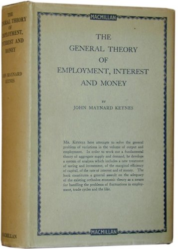
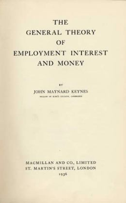

meta-info
this page was visited times since {2013-05-30}
page-wholepath: synagonism.net / lagHitp / Hitpbook / Keynes-General-Theory-{1936}
Html5.id.toc.preview-Rendering:
* McsEngl.HitpStnEcon000.last.html//dirHitp//dirStn//dirMcs!⇒KeynesGtbook,
* McsEngl.dirMcs/dirStn/dirHitp/HitpStnEcon000.last.html!⇒KeynesGtbook,
* McsEngl.{1936}.book.Keynes.The-General-Theory-of-Employment-Interest-and-Money!⇒KeynesGtbook,
* McsEngl.Hitpbook.Keynes.The-General-Theory-of-Employment-Interest-and-Money.{1936}!⇒KeynesGtbook,
* McsEngl.Keynes.book.The-General-Theory-of-Employment-Interest-and-Money.{1936}!⇒KeynesGtbook,
* McsEngl.KeynesGtbook,
* McsEngl.KeynesGtbook'(HitpStnEcon000)!⇒KeynesGtbook,
* McsEngl.The-General-Theory-of-Employment-Interest-and-Money.Keynes.{1936}.book!⇒KeynesGtbook,
* McsEngl.book.001.Keynes.The-General-Theory-of-Employment-Interest-and-Money.{1936}!⇒KeynesGtbook,
* McsEngl.book.Keynes.The-General-Theory-of-Employment-Interest-and-Money.{1936}!⇒KeynesGtbook,
* McsEngl.book.{1936}.Keynes.The-General-Theory-of-Employment-Interest-and-Money!⇒KeynesGtbook,
• Kaseluris.Nikos.1959
created this file from eBooks@Adelaide of
The-University-of-Adelaide-Library
under a Creative Commons Licence.
He added the-footnotes from the-MIA-edition.
• From 2015.01.07 to 2015.02.17 he compiled the major concepts and names of the-text and published, version7, the first crude SENSORIAL-CONCEPT-VIEW of the-book.
• version.last.dynamic: HitpStnEcon000.last.html.
• version.10.2021-04-22: ../../../book/economy/keynes.1936.general-theory.20.2021-04-22.html,
• version.9.2017-06-16.global-names (8-9-1): ../../../book/economy/keynes.1936.general-theory.9.2017-06-16.html.
• version.8.2016-01-19.pages (7.22): ../../../book/economy/keynes.1936.general-theory.8.2016-01-19.html.
• version.7.previous (6.19): ../../../book/economy/keynes.1936.general-theory.2015.02.17.7.html (sensorial-concept-view).
• version.6.previous (5.23): ../../../book/economy/keynes.1936.general-theory.2015.01.29.6.html (sensorial-concept-view start).
• version.5.previous: ../../../book/economy/keynes.1936.general-theory.2014.01.09.5.html.
• version.4.previous: ../../../book/economy/keynes.1936.general-theory.2013.11.16.4.html.
• version.3.previous: ../../../book/economy/keynes.1936.general-theory.2013.10.11.3.html.
• version.2.previous: (gym-eleous.ioa.sch.gr) 2013.04.19,
• version.1.published: (gym-eleous.ioa.sch.gr) 2013.04.14,
• email:



Keynes-General-Theory--SENSORIAL-CONCEPT-VIEW
description::
- Mcs = General-Theory SENSORIAL-CONCEPT.
- Ctrl + F = SEARCH the page (eg Mcs.KeynesGt/words-of-concept-name goes to that concept).
- xxx-yyy | xxx_yyy = multiword-name.
- xxx'yyy = yyy is ANY attribute of concept xxx.
- xxx.yyy = yyy is SPECIFIC-attribute of concept xxx.
===
· since version.9, the-names of General-Theory's concepts are GLOBAL in my site.
· this means that from ANY webpage of my site, by clicking on TITLE (green bar), you go to search-tab and by setting the-prefix 'KeynesGt' you have access to any concept of Keynes-General-Theory-book.
===
· every TEXT describes a-CONCEPT-VIEW.
· a-concept-view is a-subjective (= inside a-brain) MODEL comprised of concepts that reflect|map entities of the-brain's environment and itself (the-referent|the-object of the-text).
· we UNDERSTAND a-text IF we understand this concept-view (= meaning).
· today ALMOST ALL texts employ UNDEFINED-NAMES in their sentences.
· this makes them POLYSEMOUS, with many interpretations of their concept-views.
· here, I present MY interpretation of 'Keynes general-theory concept-view'.
· Keynes is one of the LESS polysemous authors of HIS ERA because uses a lot of definitions and criticizes the-lack of them.
· General-Theory's concept-view is neither monosemous nor consistent.
· only Keynes COULD make it monosemous and consistent but he passed away in 1946.
· when he wrote the-book it was impossible to manage ALL the-names of big paper-texts.
· to my knowledge, this is the first book published with its concept-view.
· as one of the first tries, this is a CRUDE concept-view with the major concepts of the-text.
· BUT shows THE-METHOD to make our electronic-texts subjectively MONOSEMOUS.
· we need computer-programs to easily MANAGE (create, validate, present, maintain, evolve) our future sensorial-concept-worldviews.
name::
* McsEngl.KeynesGt,
* McsEngl.KeynesGt'(Keynes-General-Theory--sensorial-concept-view)!⇒KeynesGt,
* McsEngl.Keynes-General-Theory--sensorial-concept-view!⇒KeynesGt,
* McsEngl.modelConceptView-of-Keynes-General-Theory!⇒KeynesGt,
* McsEngl.concept-system--of-Keynes-General-Theory!⇒KeynesGt,
* McsEngl.concept-view--of-Keynes-General-Theory!⇒KeynesGt,
* McsEngl.conceptual-model--of-Keynes-General-Theory!⇒KeynesGt,
* McsEngl.sensorial-concept-view--of--Keynes-General-Theory!⇒KeynesGt,
* McsEngl.viewKeynesGt!⇒KeynesGt,
Mcs.SOCIETY
name::
* McsEngl.KeynesGt/Society,
* McsEngl.KeynesGt/Country,
- a country (20),
* McsEngl.KeynesGt/Economic-society,
* McsEngl.KeynesGt/Nation,
- nations,
Mcs.ECONOMY
description::
- [hmnSgm: the-system part of a-society responsible for the-production and distribution of wealth.]
name::
* McsEngl.KeynesGt/Economic-scheme,
- the-economic-scheme (4),
* McsEngl.KeynesGt/Economic-system,
- the-economic-system (20),
* McsEngl.KeynesGt/Economic-system-as-a-whole,
- the-economic-system-as-a-whole (4),
* McsEngl.KeynesGt/Economy,
- the-economy,
* McsEngl.KeynesGt/Existing-system,
- the-existing-system,
* McsEngl.KeynesGt/Industry-as-a-whole,
- industry-as-a-whole (17),
* McsEngl.KeynesGt/Productive-system,
- the-productive-system (1),
* McsEngl.KeynesGt/Social-system,
* McsEngl.KeynesGt/System,
- a-system,
* McsEngl.KeynesGt/System-as-a-whole,
- the-system-as-a-whole,
Whole::
* society,
Part::
* consumption-system,
* production-system,
Part::
* individual,
* wealth,
Attribute::
* fault,
* trade-cycle,
Specific-division.time::
* past-economy,
* present-economy,
* future-economy,
Specific::
* closed-economy,
* closedNo-economy,
* monetary-economy,
* monetaryNo-economy,
* rest-of-the-world-economy,
* rest-of-the-world.No-economy,
* world-economy,
Reference::
* PrefaceFrenchPara3 (the economic system as a whole),
Note.hmnSgm::
- Keynes uses a simple economic-model with firms and consumers (he mentions the-State secondarily).
- Firms employ entrepreneurs (employers) and labourers (employees) whose role in the-production-system determines their incomes.
- A|output names the-total-sales of firms in a-period-of-production.
- A1 names the-sales to other firms.
- F|factor-cost names the-firm's-cost to labourers.
- U|user-cost names the-sacrifice of capital to produce the-output.
- V|supplementary-cost names the involuntary expected depreciation of capital.
- net-income-of-entrepreneurs = A - F - U - V.
- income-of-laborers = F = W x N.
- Y|total-income, income-of-consumers = (A - F - U - V) + (F) = A - U - V.
- C|consumption names the-expenditure of consumers. C = A - A1.
- Net-Saving = Y - C = (A - U - V) - (A - A1) = A1 - U - V.
- Investment = Saving.
- Then analyzes the implications of changes of the above concepts.
Mcs.Economy'FAULT
name::
* McsEngl.KeynesGt/Defect-of-economic-system,
* McsEngl.KeynesGt/Economic-problem,
* McsEngl.KeynesGt/Fault-of-economic-society,
Reference::
- Chap3SectIIPara15 (Moreover the richer the community, the wider will tend to be the gap between its ACTUAL and its POTENTIAL PRODUCTION; and therefore the more obvious and outrageous the defects of the economic system),
- Chap12SectIIPara3,
- Chap23SectIIIPara7,
- Chap23SectIIIPara9 (The weakness of the inducement to INVEST has been at all times the key to the economic problem.),
- Chap24SectIPara1 (The outstanding faults of the-economic-society in which we live are its failure to provide for FULL-EMPLOYMENT and its arbitrary and inequitable DISTRIBUTION of wealth and incomes),
- Chap24SectIIIPara2,
Mcs.Economy'TRADE-CYCLE
name::
* McsEngl.KeynesGt/Trade-cycle,
- a-trade-cycle,
- trade-cycle,
- trade-cycles,
- the-trade-cycle,
Reference::
- PrefaceFrenchPara4,
- PrefaceFrenchPara7,
- Chap10SectIVPara6,
- Chap10SectVPara6,
- Chap11SectIIIPara6,
- Chap19aPara21, Chap19aPara22,
- Chap21SectIVPara10,
- Chap22 (Notes on the Trade Cycle),
Mcs.Economy.MONETARY
name::
* McsEngl.KeynesGt/Monetary-economy,
- a-monetary-economy,
Reference::
- PrefacePara3 (A monetary economy, we shall find, is essentially one in which changing views about the future are capable of influencing the quantity of employment and not merely its direction.),
- Chap14aSectIPara6,
- Chap21SectIPara2,
- Chap21SectIPara3,
Mcs.Economy.MONETARY.NO
definition::
- Chap17SectVPara2, an economy in which there is no asset for which the liquidity-premium is always in excess of the carrying-costs; which is the best definition I can give of a so-called “non-monetary” economy.
name::
* McsEngl.KeynesGt/Non-monetary-economy,
Reference::
- Chap14aSectIPara7,
- Chap17SectIPara1,
Mcs.Economy.OPEN
name::
* McsEngl.KeynesGt/Open-system,
- an-open-system,
* McsEngl.KeynesGt/Unclosed-system,
- an-unclosed-system,
Reference::
- Chap2SectIIPara10,
- Chap10SectIIIPara2,
- Chap19SectIIIPara3,
- Chap21SectIVPara10,
Mcs.Economy.OPEN.NO
name::
* McsEngl.KeynesGt/Closed-system,
- a-closed-system,
Reference::
- Chap2SectIIPara10,
- Chap10SectIIIPara6,
- Chap19SectIIPara8, Chap19SectIIPara15,
- Chap19SectIIIPara2, Chap19SectIIIPara3,
- Chap21SectIVPara10,
- Appe3Para14,
Mcs.Economy.PRESENT
name::
* McsEngl.KeynesGt/Economy-in-which-we-live,
* McsEngl.KeynesGt/Economy-in-which-we-actually-live,
* McsEngl.KeynesGt/Existing-economic-scheme,
* McsEngl.KeynesGt/Existing-system.present,
* McsEngl.KeynesGt/Our-contemporary-economy,
* McsEngl.KeynesGt/Our-economy,
* McsEngl.KeynesGt/Present-system,
Reference::
- Chap21SectVIIPara6,
- Chap22SectVIPara2,
- Chap24SectIIIPara3,
Mcs.Economy.WORLD
name::
* McsEngl.KeynesGt/International-system,
Attribute::
* domestic-economy,
* foreign-economy,
* international-competition,
* international-division-of-labour,
* international-monetary-system,
* international-trade,
* rest-of-the-world-economy,
Reference::
- Chap15SectIIPara7,
- Chap23SectIPara1, Chap23SectIPara2,
- Chap23SectIIPara10,
- Chap23SectIIIPara11, Chap23SectIIIPara13,
Mcs.ECONOMY'INDIVIDUAL
name::
* McsEngl.KeynesGt/Human,
* McsEngl.KeynesGt/Individual,
- individuals,
Whole::
* economy,
Attribute::
* consumption,
* income,
Specific-division.production::
* entrepreneur,
* entrepreneurNo,
* labourer,
* statesman,
Specific-division.consumption::
* consumer,
=== Reference,
- PrefaceFrenchPara3,
Mcs.INDIVIDUAL.TOTAL
name::
* McsEngl.KeynesGt/Community,
- a community (5),
- the community,
* McsEngl.KeynesGt/Community-as-a-whole,
- the-community-as-a-whole (19),
Specific-division.consumption::
- consumers,
Specific-division.production::
- entrepreneurs,
- entrepreneursNo,
Reference::
- Chap2SectVIPara6, (community as a whole),
Mcs.ECONOMY'WEALTH
name::
* McsEngl.KeynesGt/Wealth,
- the-wealth,
* McsEngl.KeynesGt/Wealthy,
- wealthier,
Whole::
* economy,
Attribute::
* abundance-or-scarcity,
* distribution,
* labour,
* value,
Specific-division.firm::
* firm-wealth (capital),
* firmNo-wealth (capital.no),
Specific-division.time::
* timepoint-wealth,
* timeinterval-wealth,
Specific-division.time::
* past-wealth,
* present-wealth,
* future-wealth,
Specific::
* aggregate-wealth,
* commodity,
* community-wealth,
* created-(production)-wealth,
* destroyed-wealth,
* industry-wealth,
* money,
* natural-wealth,
* real-wealth,
* total-wealth,
* state-wealth,
Mcs.Wealth'ABUNDANCE_OR_SCARCITY
description::
- Chap16SectIIPara2, I sympathise, therefore, with the pre-classical doctrine that everything is produced by labour, aided by what used to be called art and is now called technique, by natural resources which are free or cost a rent according to their scarcity or abundance, and by the results of past labour, embodied in assets, which also command a price according to their scarcity or abundance.
name::
- the-scarcity-theory,
* McsEngl.KeynesGt/Abundance-or-scarcity,
* McsEngl.KeynesGt/Scarcity-or-abundance,
* McsEngl.KeynesGt/Scarcity-theory,
Reference::
- Chap16SectIIPara3 (the scarcity theory),
- Chap16SectIIIPara7,
- Chap18SectIIIPara13,
- Chap22SectIIPara2, Chap22SectIIPara4, Chap23SectIIPara7,
- Chap23SectIIIPara2, Chap23SectIIIPara3, Chap23SectIIIPara6, Chap23SectIIIPara7,
- Chap24SectIIPara4, Chap24SectIIPara7,
Mcs.Wealth'DISTRIBUTION
name::
* McsEngl.KeynesGt/Distribution-of-wealth,
Reference::
- Chap24SectIPara1 (The outstanding FAULTS of the economic society in which we live are its failure to provide for full employment and its arbitrary and inequitable DISTRIBUTION of wealth and incomes),
- Chap24SectIPara5 (For my own part, I believe that there is social and psychological justification for significant inequalities of incomes and wealth, but not for such large disparities as exist to-day.),
Mcs.Wealth.TOTAL
name::
* McsEngl.KeynesGt/Aggregate-wealth, (1)
Part-division::
- total-capital,
- total-capital.no,
Reference::
- Chap7SectVPara3 (aggregate-wealth),
Mcs.Labour
name::
* McsEngl.KeynesGt/Labour,
* McsEngl.KeynesGt/Volume-of-labour,
Attribute::
* labourer,
* value,
* wage,
Specific::
* employment,
* employment.no,
* unit-of-labour,
* ordinary-labour,
* special-labour,
Reference::
- Chap4SectIIIPara2 (ordinary, special labour),
- Chap16SectIIPara2,
- Chap18SectIPara2 (We take as given the existing skill and quantity of available labour),
Mcs.Labour.UNIT
definition::
- Chap4SectIIIPara2, the quantity of employment can be sufficiently defined for our purpose by taking an HOUR'S-EMPLOYMENT of ORDINARY-LABOUR as our UNIT and weighting an hour's employment of special labour in proportion to its remuneration; i.e. an hour of special labour remunerated at double ordinary rates will count as two units. We shall call the unit in which the quantity of employment is measured the labour-unit.
name::
* McsEngl.KeynesGt/Labour-unit,
Generic::
* labour,
Attribute::
* wage-unit,
Reference::
- Chap4SectIIIPara3 (our assumption of a homogeneous unit of labour involves no difficulties unless there is great instability in the relative remuneration of different labour-units),
- Chap8SectIIPara2,
- Chap10SectIPara1,
- Chap20SectIPara6,
Mcs.Employment.NO
name::
* McsEngl.KeynesGt/Unemployment,
* McsEngl.KeynesGt/Unemployment,
Generic::
* labour,
Specific-complement::
* employment,
Reference::
- PrefaceFrenchPara7 ([Say's] fallacy that demand is created by supply. Say was implicitly assuming that the economic system was always operating up to its full capacity, so that a new activity was always in substitution for, and never in addition to, some other activity... Yet a theory so based is clearly incompetent to tackle the problems of unemployment and of the trade cycle.),
- Chap2SectIPara6,
- Chap2SectIIPara1,
- Chap2SectIIPara5 (the contention that the unemployment which characterises a DEPRESSION is due to a refusal by labour to accept a reduction of money-wages is not clearly supported by the facts. ),
- Chap2SectIVPara2,
- Chap8SectIIIPara5,
- Chap8SectIVPara6, Chap8SectIVPara11,
- Chap9SectIPara5,
- Chap10SectIIPara5, Chap10SectIIIPara4, Chap10SectIIIPara6, Chap10SectVIPara1,
- Chap16SectIIIPara2,
- Chap17SectIIIPara17,
- Chap18SectIIIPara9, 18SectIIIPara12,
- Chap19SectIIPara16,
- Chap19a (Professor Pigou's “theory of Unemployment”),
- Chap21SectIIIPara2,
- Chap22SectIIIPara2,
- Chap23SectIPara3,
- Chap24SectIIIPara8, Chap24SectIVPara3,
- Appe3Para12,
Mcs.Employment.NO.TOTAL
name::
* McsEngl.KeynesGt/Level-of-unemployment,
Reference::
- Chap2SectIIPara11,
- Chap24SectIIIPara8 (The authoritarian state systems of to-day seem to solve the problem of unemployment at the expense of efficiency and of freedom. It is certain that the world will not much longer tolerate the unemployment which, apart from brief intervals of excitement, is associated -- and, in my opinion, inevitably associated -- with present-day capitalistic individualism. But it may be possible by a right analysis of the problem to cure the disease whilst preserving efficiency and freedom.),
Mcs.Employment.NO.INVOLUNTARY (Unemployment.involuntary)
definition::
- Chap2SectIVPara2 Men are INVOLUNTARILY-UNEMPLOYED If, in the event of a small rise in the price of wage-goods relatively to the money-wage, both the aggregate supply of labour willing to work for the current money-wage and the aggregate demand for it at that wage would be greater than the existing volume of employment.
name::
* McsEngl.KeynesGt/Involuntary-unemployment,
Reference::
- Chap2SectIPara6, Chap2SectIIPara7,
- Chap2SectIVPara1, Chap2SectIVPara2, Chap2SectIVPara3,
- Chap2SectIVPara4 (We need to throw over the second postulate of the classical doctrine and to work out the behaviour of a system in which involuntary unemployment in the strict sense is possible.),
- Chap2SectVIIPara1,
- Chap10SectIIPara5, Chap10SectVIPara1,
- Chap14aSectIPara7, Chap14aSectIIPara5,
- Chap19aPara8, Chap19aPara11, Chap19aPara12,
- Note2.2dest,
Mcs.MONEY
description::
- Note13.1dest, [13.1] Without disturbance to this definition, we can draw the line between “money”; and “debts”; at whatever point is most convenient for handling a particular problem. For example, we can treat as money any command over general purchasing power which the owner has not parted with for a period in excess of three months, and as debt what cannot be recovered for a longer period than this; or we can substitute for “three months”; one month or three days or three hours or any other period; or we can exclude from money whatever is not legal tender on the spot. It is often convenient in practice to include in money time-deposits with banks and, occasionally, even such instruments as (e.g.) treasury bills. As a rule, I shall, as in my Treatise on Money, assume that money is coextensive with bank deposits.
name::
* McsEngl.KeynesGt/Money,
- moneys,
* McsEngl.KeynesGt/M,
* McsEngl.KeynesGt/Sum,
* McsEngl.KeynesGt/Quantity-of-money,
Generic::
* wealth,
Specific-division::
* firm-money,
* firmNo-money,
Specific::
* cash,
* dollar,
* foreign,
* price,
* sterling,
* total-money,
Reference::
- Chap17SectIPara6,
- Chap21SectIPara3 (the importance of money essentially flows from its being a link between the present and the future.),
Mcs.money.PRICE (Price)
definition::
- Chap4SectIIIPara2, In dealing with the theory of employment I propose, therefore, to make use of only TWO fundamental UNITS of quantity, namely, quantities of MONEY-VALUE and quantities of employment. The first of these is strictly homogeneous, and the second can be made so.
name::
* McsEngl.KeynesGt/Price,
* McsEngl.KeynesGt/Money-value,
* McsEngl.KeynesGt/Price,
* McsEngl.KeynesGt/Value,
Attribute::
* abundance-or-scarcity,
* labour,
* wealth,
Specific::
* market-value,
* supply-price,
Specific::
* individual-price,
* total-price,
Reference::
- PrefaceGermanPara5 (the influence of loan expenditure on prices),
- PrefaceFrenchPara6 (I regard the price level as a whole as being determined in precisely the same way as individual prices; that is to say, under the influence of supply and demand.),
- Chap21 (The Theory of Prices),
- Chap6SectIPara17 (the money value of Professor Pigou's most recent definition of the national dividend.),
- Chap7SectVPara1,
- Chap8SectIIPara4 (unforeseen changes in the money-value of its wealth.),
- Chap13SectIIPara14 (an increase in the money value of the wage-unit.),
- Chap16SectIIPara2,
- Chap17SectIIIPara8 (as money-values fall),
Mcs.price.TOTAL
description::
- Chap4SectIIPara4, the well-known, but unavoidable, element of VAGUENESS which admittedly attends the concept of the GENERAL-PRICE-LEVEL makes this term very unsatisfactory for the purposes of a causal analysis, which ought to be exact.
name::
* McsEngl.KeynesGt/General-price-level,
* McsEngl.KeynesGt/General-level-of-prices,
* McsEngl.KeynesGt/General-price-level,
* McsEngl.KeynesGt/Price-level,
* McsEngl.KeynesGt/Price-level-as-a-whole, (2)
* McsEngl.KeynesGt/Prices,
Reference::
- Chap4SectIIPara1 (That the units, in terms of which economists commonly work, are unsatisfactory can be illustrated by the concepts of the national dividend, the stock of real capital and the general price-level:),
- Chap4SectIIPara7,
- Chap4SectIIIPara4, Chap4SectIIIPara5,
- Chap21SectIIPara1 (The general price-level depends partly on the rate of remuneration of the factors of production which enter into marginal cost and partly on the scale of output as a whole, i.e. (taking equipment and technique as given) on the volume of employment.),
- Chap21SectIIIPara1 (the general price-level (taking equipment and technique as given) depends partly on the wage-unit and partly on the volume of employment.),
- Chap21SectIIIPara4 (The theory of prices, that is to say, the analysis of the relation between changes in the quantity of money and changes in the price-level with a view to determining the elasticity of prices in response to changes in the quantity of money, must, therefore, direct itself to the five complicating factors set forth above.),
- Chap21SectIVPara7,
- Chap21SectVIIPara3 (the VERY-LONG-RUN course of prices has almost always been UPWARD),
Mcs.money.TOTAL (M)
description::
- Chap13SectIIPara5, Liquidity-preference is a potentiality or functional tendency, which fixes the quantity of money which the public will hold when the rate of interest is given; so that if r is the rate of interest, M the quantity of money and L the function of liquidity-preference, we have M = L(r). This is where, and how, THE-QUANTITY-OF-MONEY enters into the economic scheme.
name::
* McsEngl.KeynesGt/M.total,
* McsEngl.KeynesGt/Quantity-of-money.total,
- The-quantity-of-money (1),
- the-quantity-of-money (120),
Generic::
* money,
Reference::
- Chap21SectVIIPara3 (if the quantity of money remains very deficient for a long time, the escape will be normally found in changing the monetary standard or the monetary system so as to raise the quantity of money, rather than in forcing down the wage-unit and thereby increasing the burden of debt.),
Mcs.ECONOMY'MISC
Mcs.Demand.EFFECTIVE
definition::
- Chap3SectIPara4, The value of D at the point of the aggregate demand function, where it is intersected by the aggregate supply function, will be called the effective demand.
- Chap19SectIIPara2, the effective demand, being the SUM of the EXPECTED-CONSUMPTION and the EXPECTED-INVESTMENT.
name::
* McsEngl.KeynesGt/D,
* McsEngl.KeynesGt/Effective-demand,
- The-effective-demand (1),
- the-effective-demand (9),
Reference::
- Chap21SectIVPara3 (effective demand corresponds to the income the expectation of which has set production moving, not to the actually realised income, and to gross, not net, income.),
Mcs.Demand.EFFECTIVE.TOTAL (D)
definition::
- Chap3SectIPara4, The value of D at the point of the aggregate demand function, where it is intersected by the aggregate supply function, will be called the effective demand.
- Chap19SectIIPara2, the effective demand, being the sum of the expected consumption and the expected investment.
name::
* McsEngl.KeynesGt/D.total,
* McsEngl.KeynesGt/Effective-demand.total,
- The-effective-demand (1),
- the-effective-demand (9),
Reference::
- Chap3SectIIPara7 (The amount of labour N which the entrepreneurs decide to employ depends on the sum (D) of two quantities, namely D1, the amount which the community is expected to spend on consumption, and D2, the amount which it is expected to devote to new-investment. D is what we have called above the effective demand),
- Chap3SectIIPara8 (D1 + D2 = D),
Chap16SectIIIPara7 (once we understand the influences upon which effective demand depends),
Mcs.Expectation
definition::
* [hmnSgm: Expectation is present subjective INFORMATION about an-entity in the-future.]
name::
* McsEngl.KeynesGt/Expectation,
Attribute::
* employment,
* output,
Specific::
* expected-consumption,
* expected-investment,
* expected-profit,
Specific::
* long-term,
* short-term,
Reference::
- Chap4SectIPara2 (The three perplexities which most impeded my progress in writing this book, so that I could not express myself conveniently until I had found some solution for them, are: firstly, the choice of the units of quantity appropriate to the problems of the economic system as a whole; secondly, the part played by expectation in economic analysis; and, thirdly, the definition of income.),
- Chap5 (Expectation as Determining Output and Employment),
- Chap5SectIPara1 (the-ENTREPRENEUR has to form the best expectations he can as to what the consumers will be prepared to pay when he is ready to supply them (directly or indirectly) after the elapse of what may be a lengthy period; and he has no choice but to be GUIDED by these EXPECTATIONS, if he is to produce at all by processes which occupy time),
- Chap7SectIIIPara2 (In my Treatise on Money the concept of changes in the excess of investment over saving, as there defined, was a way of handling changes in profit, though I did not in that book distinguish clearly between EXPECTED and REALISED results.),
- Chap21SectIPara3 (the theory of stationary equilibrium and the theory of shifting equilibrium -- meaning by the latter the theory of a system in which changing views about the future are capable of influencing the present situation.),
Mcs.Expectation.LONG_TERM
definition::
- Chap5SectIPara2, is concerned with what the entrepreneur can hope to EARN in the shape of future returns if he PURCHASES (or, perhaps, manufactures) “finished” output as an addition to his capital equipment.
name::
* McsEngl.KeynesGt/Long-term-expectation,
- long-term-expectation,
- long-term-expectations,
Generic::
* expectation,
Specific-division.time::
* past-expectation,
* present-expectation,
* future-expectation,
Reference::
- Chap12 (The State of Long-Term Expectation),
Mcs.Expectation.SHORT_TERM
definition::
- Chap5SectIPara2, is concerned with the PRICE which a manufacturer can EXPECT to get for his “finished” output at the time when he commits himself to STARTING the process which will produce it; output being “finished” (from the point of view of the manufacturer) when it is ready to be used or to be sold to a second party.
name::
* McsEngl.KeynesGt/Short-term-expectation,
- short-term-expectation,
- short-term-expectations (5),
Generic::
* expectation,
Mcs.Monetary-system
name::
* McsEngl.KeynesGt/Monetary-system,
- a-monetary-system,
- monetary-systems,
- the-monetary-system,
Reference::
- Chap16SectIIIPara1,
- Chap21SectVPara3,
- Chap21SectVIIPara3,
- Chap21SectVIIPara4,
- Chap23SectIIPara8,
- Chap23SectIIIPara11 (international),
Mcs.Unit-of-quantity
name::
* McsEngl.KeynesGt/Units-of-quantity,
- the-units-of-quantity,
Reference::
- Chap4 (The Choice of Units),
- Chap4SectIPara2 (The three perplexities which most impeded my progress in writing this book, so that I could not express myself conveniently until I had found some solution for them, are: firstly, the choice of the units of quantity appropriate to the problems of the economic system as a whole; secondly, the part played by expectation in economic analysis; and, thirdly, the definition of income.),
- Chap4SectIIPara1 (That the units, in terms of which economists commonly work, are unsatisfactory can be illustrated by the concepts of the national dividend, the stock of real capital and the general price-level:),
Mcs.ECONOMY'PRODUCTION-SYSTEM
name::
* McsEngl.KeynesGt/Industry-as-a-whole.production-system,
Whole::
* economy,
Attribute::
* capital,
* entrepreneur,
* firm,
* industry,
* labourer,
* output,
* product,
* production-process,
Reference::
- Chap4SectIVPara1,
- Chap19SectIPara6, Chap19SectIPara7,
- Chap20SectIPara1, Chap20SectIPara3, Chap20SectIPara5, Chap20SectIPara6, Chap20SectIPara16, Chap20SectIPara17,
- Chap21SectIIPara1,
- Note10.1dest,
Mcs.Production'PERIOD
name::
* McsEngl.KeynesGt/Period,
* McsEngl.KeynesGt/Period-of-production,
* McsEngl.KeynesGt/Period-of-time,
Reference::
- Chap7SectIIPara4,
- Chap20SectIIPara5,
Mcs.Production-process
name::
* McsEngl.KeynesGt/Process-of-production,
* McsEngl.KeynesGt/Produce,
* McsEngl.KeynesGt/Production,
Whole::
* production-system,
Attribute::
* factor-of-production,
* period-of-production,
Reference::
- PrefaceGermanPara1,
- PrefaceFrenchPara7,
- Chap2Para1,
- Chap3SectIPara1, Chap3SectIPara4,
- Chap3SectIIPara14,
- Chap3SectIIPara15 (actual, potential),
- Chap5SectIPara1 (All production is for the purpose of ultimately satisfying a consumer.),
- Chap5SectIPara3, Chap5SectIPara6,
- Chap6SectIPara3, Chap6SectIPara4,
Mcs.Firm
name::
* McsEngl.KeynesGt/Business,
* McsEngl.KeynesGt/Firm,
- firms,
Whole::
* economy,
* industry,
Attribute::
* capital,
* cost,
* entrepreneur,
* expectation,
* income,
* investment,
* labourer,
Specific::
* individual-firm,
* industry-firm,
* total-firm,
Mcs.Firm.TOTAL
name::
* McsEngl.KeynesGt/Firms,
- the-firms,
Whole::
* economy,
Mcs.Factor-of-production
name::
* McsEngl.KeynesGt/Factor-of-production, (23)
- a-factor-of-production (2),
- factor-of-production (1),
- factors-of-production (5),
- the-factors-of-production (15),
Reference::
- Chap3SectIPara1 (income),
- Chap3SectIPara4, Chap6SectIPara6, Chap6SectIPara9,
- Chap6aSectIPara2,
- Chap11SectIIPara5,
- Chap16SectIIPara2,
- Chap21SectIIPara1,
- Chap21SectIIIPara1, Chap21SectIIIPara2,
- Chap21SectIVPara13,
- Chap21SectVPara2, Chap21SectVPara4,
- Chap23SectIIIPara2,
- Chap24SectIIIPara2, Chap24SectIIIPara3,
- Appe3SectVPara6,
- Note14.10dest,
- Note14.11dest,
Mcs.PRODUCTION'INDIVIDUAL
Mcs.Entrepreneur
definition::
- Chap5SectIPara1, the entrepreneur (including both the producer and the investor in this description)
name::
* McsEngl.KeynesGt/Employer,
* McsEngl.KeynesGt/Entrepreneur,
Generic::
* individual,
Specific::
* investor,
* producer,
Reference::
- Chap2SectIIPara11 (employer),
Mcs.Entrepreneur.INVESTOR (Investor)
definition::
- Chap5SectIPara1, the entrepreneur (including both the producer and the investor in this description)
name::
* McsEngl.KeynesGt/Investor,
- an-investor (2),
- the-investor,
- the-investors,
Specific::
* functionless-investor,
Reference::
- Chap24SectIIPara5 (the euthanasia of the rentier, of the functionless investor, will be nothing sudden, merely a gradual but prolonged continuance of what we have seen recently in Great Britain, and will need no revolution.),
Mcs.Entrepreneur.PRODUCER (Producer)
definition::
- Chap5SectIPara1, the entrepreneur (including both the producer and the investor in this description)
name::
* McsEngl.KeynesGt/Producer,
* McsEngl.KeynesGt/Producer,
- the-producer,
Mcs.Rentier
name::
* McsEngl.KeynesGt/Functionless-investor,
* McsEngl.KeynesGt/Investor.functionless,
* McsEngl.KeynesGt/Rentier,
Generic::
* investor,
Attribute::
* rate-of-interest,
Reference::
- Chap8SectIIPara2,
- Chap16SectIVPara4 (Though the rentier would disappear, there would still be room, nevertheless, for enterprise and skill in the estimation of prospective yields about which opinions could differ.),
- Chap19SectIIPara6,
- Chap19SectIIPara7,
- Chap19SectIIPara24,
- Chap20SectIIIPara5,
- Chap24SectIIPara4 (the euthanasia of the rentier),
- Chap24SectIIPara5 (the euthanasia of the rentier, of the functionless investor, will be nothing sudden, merely a gradual but prolonged continuance of what we have seen recently in Great Britain, and will need no revolution.),
- Note14.16dest,
Mcs.Entrepreneur.NO (Labourer)
name::
* McsEngl.KeynesGt/Labourer,
* McsEngl.KeynesGt/Rest-of-community,
* McsEngl.KeynesGt/Rest-of-community,
- the-rest-of-the-community (1),
* McsEngl.KeynesGt/Wage-earner,
* McsEngl.KeynesGt/Worker,
- the-workers,
Generic::
* individual,
Specific-complement::
- entrepreneur,
Reference::
- Chap2SectIIPara11 (worker),
- Chap6SectIPara5 (the-rest-of-the-community),
Note.hmnSgm::
- The abstract economic model of Keynes contains mainly employers (entrepreneurs) and employees (labourers).
Mcs.PRODUCTION'WEALTH (Capital)
definition::
- [hmnSgm: Capital is the-wealth of firms.]
name::
* McsEngl.KeynesGt/Capital,
* McsEngl.KeynesGt/Capital-good,
* McsEngl.KeynesGt/Capital-wealth,
Generic::
* wealth,
Whole::
* firm,
Attribute::
* entrepreneur,
* capital-account,
* firm,
* life,
* rate-of-interest,
* replacement-cost,
* return-of-capital,
Specific-complement::
* capital.no,
Specific::
* firm-capital,
* industry-capital,
* total-capital,
Specific::
* asset,
* consumption-capital,
* cost,
* equipment,
* fixed,
* liquid,
* output,
* working,
Reference::
- Chap8SectIVPara13 (related to consumption),
- Chap16 (Sundry Observations on the Nature of Capital),
- Chap17SectIIPara7 (consumption capital (e.g. a house)),
Mcs.Capital'DEMAND_PRICE
definition::
- Chap11SectIPara6, If Qr is the prospective yield from an asset at time r, and dr is the present value of £1 deferred r years at the current rate of interest, ΣQrdr is the demand price of the investment; and investment will be carried to the point where ΣQrdr becomes equal to the supply price of the investment as defined above.
name::
* McsEngl.KeynesGt/Demand-price,
Reference::
- Chap2SectVIPara8 (It is, then, the assumption of equality between the demand price of output as a whole and its supply price which is to be regarded as the classical theory's “axiom of parallels”.),
- Chap2SectVIIPara1 (3. that supply creates its own demand in the sense that the aggregate demand price is equal to the aggregate supply price for all levels of output and employment.),
- Chap3SectIPara5,
- Chap3SectIPara6 (Thus Say's law, that the aggregate demand price of output as a whole is equal to its aggregate supply price for all volumes of output, is equivalent to the proposition that there is no obstacle to full employment.),
- Chap3SectIIPara3 (Thus, given the propensity to consume and the rate of new investment, there will be only one level of employment consistent with equilibrium; since any other level will lead to inequality between the aggregate supply price of output as a whole and its aggregate demand price.),
- Chap11SectVPara3 (It is, therefore, consonant with, and agreeable to, our broad principles of thought, that the expectation of the future should affect the present through the demand price for durable equipment.),
Mcs.Capital'MARGINAL_EFFICIENCY
definition::
- Chap11SectIPara2, The RELATION between the PROSPECTIVE-YIELD of a capital-asset and its supply price or REPLACEMENT-COST, i.e. the relation between the prospective yield of one more unit of that type of capital and the cost of producing that unit, furnishes us with the marginal efficiency of capital of that type.
name::
* McsEngl.KeynesGt/Marginal-efficiency-of-capital, (138)
- the-marginal-efficiency-of-capital,
Reference::
- Chap3SectIIPara17 (Thus the analysis of the propensity to consume, the definition of the marginal efficiency of capital and the theory of the rate of interest are the three main gaps in our existing knowledge which it will be necessary to fill),
- Chap11SectIIPara7 (Thus Professor Fisher uses his “rate of return over cost” in the same sense and for precisely the same purpose as I employ “the marginal efficiency of capital”.),
- Chap11SectIIIPara1 (The most important confusion concerning the meaning and significance of the marginal efficiency of capital has ensued on the failure to see that it depends on the PROSPECTIVE yield of capital, and not merely on its current yield.),
Mcs.Capital'MARGINAL_EFFICIENCY_SCHEDULE
definition::
- Chap11SectIPara4, Thus for each type of capital we can build up a schedule, showing by how much investment in it will have to increase within the period, in order that its marginal efficiency should fall to any given figure. We can then aggregate these schedules for all the different types of capital, so as to provide a schedule relating the rate of aggregate investment to the corresponding marginal efficiency of capital in general which that rate of investment will establish. We shall call this the investment demand-schedule; or, alternatively, the schedule of the marginal efficiency of capital.
name::
* McsEngl.KeynesGt/Investment-demand-schedule,
* McsEngl.KeynesGt/Schedule-of-marginal-efficiency-of-capital,
- the-schedule-of-the-marginal-efficiency-of-capital,
Reference::
- Chap21SectVIIPara5 (To-day and presumably for the future the schedule of the marginal efficiency of capital is, for a variety of reasons, much lower than it was in the nineteenth century.),
Mcs.Capital'INTEREST
name::
* McsEngl.KeynesGt/Interest,
Attribute::
* rate-of-interest,
Reference::
- Chap24SectIIPara4 (The owner of capital can obtain interest because capital is scarce, just as the owner of land can obtain rent because land is scarce.)
Mcs.Capital'RATE_OF_INTEREST (r)
definition::
- Chap17SectIPara2, THE-MONEY-RATE-OF-INTEREST -- we may remind the reader -- is nothing more than the PERCENTAGE excess of a sum of money contracted for forward delivery, e.g. a year hence, over what we may call the “spot” or cash price of the sum thus contracted for forward delivery. It would seem, therefore, that for every kind of CAPITAL-ASSET there must be an ANALOGUE of the rate of interest on money... Thus for every durable commodity we have a rate of interest in terms of itself; -- A-WHEAT-RATE-OF-INTEREST, A-COPPER-RATE-OF-INTEREST, a house-rate of interest, even a steel-plant-rate of interest.
name::
- our-theory-of-the-rate-of-interest (2),
- the theory of interest,
- the-theory-of-the-rate-of-interest (4),
* McsEngl.KeynesGt/Interest-rate,
* McsEngl.KeynesGt/Price-of-debts,
* McsEngl.KeynesGt/Rate-of-interest, (591)
- a-rate-of-interest (14),
* McsEngl.KeynesGt/r,
Attribute::
* interest,
* rentier,
Reference::
- Chap3SectIIPara17 (Thus the analysis of the propensity to consume, the definition of the marginal efficiency of capital and the theory of the rate of interest are the three main gaps in our existing knowledge which it will be necessary to fill),
- Chap11SectIPara5 (current, market),
- Chap13 (The General Theory of the Rate of Interest),
- Chap13SectIPara1 (the rate of interest governs the terms on which funds are being currently supplied.),
- Chap13SectIIPara4 (if a man hoards his savings in cash, he earns no interest, though he saves just as much as before... the rate of interest is the reward for parting with liquidity for a specified period.),
- Chap13SectIIPara5 (r is the rate of interest),
- Chap13SectIIPara5 (If this explanation is correct, the quantity of money is the other factor, which, in conjunction with liquidity-preference, determines the actual rate of interest in given circumstances.),
- Chap13SectIVPara1 (price of debts),
- Chap14SectIPara2 (classical-theory: Just as the price of a commodity is necessarily fixed at that point where the demand for it is equal to the supply, so the rate of interest necessarily comes to rest under the play of market forces at the point where the amount of investment at that rate of interest is equal to the amount of saving at that rate),
- Chap14aSectIPara6 (The perplexity which I find in Marshall's account of the matter is fundamentally due, I think, to the incursion of the concept “interest”, which belongs to a monetary economy, into a treatise which takes no account of money.),
- Chap16SectIPara5 (And the current rate of interest DEPENDS, as we have seen, not on the strength of the desire to hold WEALTH, but on the strengths of the desires to hold it in LIQUID and in illiquid forms respectively, coupled with the amount of the supply of wealth in the one form relatively to the supply of it in the other.),
- Chap17SectIPara2 (Thus for every durable commodity we have a rate of interest in terms of itself; -- a wheat-rate of interest, a copper-rate of interest, a house-rate of interest, even a steel-plant-rate of interest.)
- Chap24SectIIPara1 (There is, however, a second, much more fundamental inference from our argument which has a bearing on the future of INEQUALITIES-OF-WEALTH; namely, our theory of the rate of interest... the scale of INVESTMENT is promoted by a LOW rate of interest),
Mcs.Capital'RETURN
definition::
- Chap6aSectIVPara4, the RETURN to liquid capital consists of a single term; whereas in the case of fixed capital, which is durable and used up gradually, the RETURN consists of a series of user COSTS and PROFITS earned in successive periods.
- Chap17SectIIPara6, It follows that the total RETURN expected from the ownership of an asset over a period is equal to its YIELD minus its carrying COST plus its liquidity-premium, i.e. to q − c + l.
name::
* McsEngl.KeynesGt/Return,
Specific-division.time::
* [past-return],
* [present] current-return,
* [future] prospective-return,
Reference::
- Chap11SectIPara1,
- Chap11SectIIPara4,
Mcs.Capital'YIELD
definition::
- Chap11SectIPara1, When a man buys a capital-asset, he purchases the right to the series of prospective RETURNS, which he expects to obtain from selling its output, after DEDUCTING the running EXPENSES of obtaining that output, during the life of the asset. This series of annuities it is convenient to call the prospective yield of the investment.
- Chap17SectIIPara6, It follows that the total RETURN expected from the ownership of an asset over a period is equal to its YIELD minus its carrying COST plus its liquidity-premium, i.e. to q − c + l.
name::
* McsEngl.KeynesGt/Yield-of-capital,
Specific::
* actual-expected-yield,
* present-future-yield,
Reference::
- Chap6aSectIPara5 (actual - expected yield),
- Chap11SectIIIPara1 (prospective - current yield),
- Chap16SectIPara4 (the owner of capital does NOT desires a capital-asset as such, he really desires its prospective-yield),
- Chap16SectIIPara1 (For the only reason why an asset offers a prospect of yielding during its life services having an aggregate value greater than its initial supply price is because it is SCARE; and it is kept scarce because of the competition of the rate of interest on money. If capital becomes less scarce, the excess yield will diminish, without its having become less productive -- at least in the physical sense.),
- Chap17SectIIPara3 (YIELD or OUTPUT),
Mcs.Capital'YIELD.EXPECTED
definition::
- Chap11SectIPara1, When a man buys a capital-asset, he purchases the right to the series of prospective RETURNS, which he expects to obtain from selling its output, after DEDUCTING the running EXPENSES of obtaining that output, during the life of the asset. This series of annuities it is convenient to call the prospective yield of the investment.
name::
* McsEngl.KeynesGt/Prospective-yield,
* McsEngl.KeynesGt/Prospective-yield-of-capital,
Attribute::
* marginal-efficiency-of-capital,
Reference::
- Chap6aSectIIPara2,
- Chap11SectIPara1, Chap11SectIPara2,
Mcs.Capital'SUPPLY_PRICE
definition::
- Chap11SectIPara2, the supply price of the capital-asset, meaning by this, NOT the market-price at which an asset of the type in question can actually be purchased in the market, but the PRICE which would just induce a manufacturer newly to PRODUCE an additional unit of such assets, i.e. what is sometimes called its REPLACEMENT-COST.
name::
* McsEngl.KeynesGt/Replacement-cost,
* McsEngl.KeynesGt/Supply-price,
* McsEngl.KeynesGt/Replacement-cost-of-capital-asset,
* McsEngl.KeynesGt/Supply-price-of-capital-asset,
Mcs.Capital'SUPPLY-PRICE.TOTAL (Z)
definition::
- Chap3SectIPara1, the aggregate supply price of the output of a given amount of employment is the EXPECTATION of proceeds which will just make it worth the while of the entrepreneurs to give that employment.
name::
* McsEngl.KeynesGt/Aggregate-supply-price,
* McsEngl.KeynesGt/Aggregate-supply-price-of-output,
Reference::
- Chap2SectVIIPara1,
- Chap3SectIPara3, Chap3SectIPara4, Chap3SectIPara5, Chap3SectIPara6,
- Chap3SectIIPara3, Chap3SectIIPara12,
- Chap6aSectIPara4,
- Chap8SectIIIPara6,
- Chap20SectIPara1,
- Note3.3dest,
- Note6.3dest,
Mcs.Capital.TOTAL
Whole::
* total-wealth,
Part-complement::
* total-capital.no,
Mcs.Capital.ASSET
definition::
- Chap11SectIPara2, one more unit of that TYPE of capital.
name::
* McsEngl.KeynesGt/Asset,
* McsEngl.KeynesGt/Capital-asset,
* McsEngl.KeynesGt/Type-of-capital,
Generic::
* capital,
Attribute::
* replacement-cost,
* yield,
Reference::
- Chap7SectVPara1 (value of capital-asset),
Mcs.Asset'CARRYING_COST
description::
- Chap17SectIIPara4, Most assets, except money, suffer some wastage or involve some COST through the MERE PASSAGE OF TIME (apart from any change in their relative value), irrespective of their being used to produce a yield; i.e. they involve a carrying cost c measured in terms of themselves.
name::
* McsEngl.KeynesGt/Carrying-cost,
Reference::
- Chap16SectIIIPara4,
- Chap17SectIIPara5, Chap17SectIIPara6, Chap17SectIIPara7,
- Chap17SectIIIPara13, Chap17SectIIIPara15,
- Chap17SectIVPara2, Chap17SectIVPara3, Chap17SectIVPara4, Chap17SectIVPara5, Chap17SectIVPara6,
- Chap17SectVPara1, Chap17SectVPara2, Chap17SectVPara5,
- Chap22SectIIPara6, Chap22SectIIPara8,
- Chap23SectVIPara7,
Mcs.Capital.EQUIPMENT
definition::
- Chap6SectIPara4, [the entrepreneur] will end up with a capital equipment, which term includes both his stocks of UNFINISHED-GOODS or working capital AND his stocks of FINISHED-GOODS, having a value G.
- Chap7SectIIPara2, ... CAPITAL-EQUIPMENT, whether it consists of FIXED capital, WORKING capital or LIQUID capital.
name::
* McsEngl.KeynesGt/Capital-equipment,
- a-capital-equipment (1),
- capital-equipment (21),
- capital-equipments (3),
- the-capital-equipment (9),
* McsEngl.KeynesGt/Equipment,
* McsEngl.KeynesGt/G,
Specific::
* firm,
* industry,
* total,
Reference::
- Chap18SectIPara2 (We take as given ... the existing quality and quantity of available equipment),
Mcs.Capital.EQUIPMENT.TOTAL (G)
definition::
- Chap6SectIPara4, [the entrepreneur] will end up with a capital equipment, which term includes both his stocks of UNFINISHED-GOODS or working capital AND his stocks of FINISHED-GOODS, having a value G.
name::
* McsEngl.KeynesGt/G.total,
Generic::
* capital-equipment,
Mcs.Capital.EQUIPMENT.TOTAL.SUPPOSED (G')
definition::
- Chap6SectIPara4, If he had decided not to use it to produce output, there is, nevertheless, a certain optimum sum which it would have paid him to spend on maintaining and improving it. Let us suppose that, in this event, he would have spent B' on its maintenance and improvement, and that, having had this spent on it, it would have been worth G' at the end of the period.
Mcs.Capital.FIXED
description::
- Chap6aSectIVPara4, The essential difference between raw materials and fixed capital lies not in their liability to user and supplementary costs, but in the fact that the return to liquid capital consists of a single term; whereas in the case of fixed capital, which is durable and used up gradually, the return consists of a series of user costs and profits earned in successive periods.
name::
* McsEngl.KeynesGt/Fixed-capital,
Reference::
- Chap6aSectIVPara3,
- Chap7SectIIPara2 (Investment, thus defined, includes, therefore, the increment of capital equipment, whether it consists of fixed capital, working capital or liquid capital;),
- Chap7SectIIPara3,
- Chap14aSectIIIPara2,
- Chap22SectIIPara10,
- Appe2Para10,
Mcs.Debt
description::
- Note13.1dest, [13.1] Without disturbance to this definition, we can draw the line between “MONEY”; and “DEBTS”; at whatever point is most convenient for handling a particular problem. For example, we can treat as money any command over general purchasing power which the owner has not parted with for a period in excess of three months, and as debt what cannot be recovered for a longer period than this; or we can substitute for “three months”; one month or three days or three hours or any other period; or we can exclude from money whatever is not legal tender on the spot. It is often convenient in practice to include in money time-deposits with banks and, occasionally, even such instruments as (e.g.) treasury bills. As a rule, I shall, as in my Treatise on Money, assume that money is coextensive with bank deposits.
name::
* McsEngl.KeynesGt/Debt,
- a debt,
Reference::
- Chap7SectVPara1,
- Chap8SectIIPara6, Chap8SectIVPara6,
- Chap9SectIPara4,
- Chap13SectIIPara7, Chap13SectIIPara8,
- Chap15SectIIPara2, Chap15SectIIPara6, Chap15SectIIIPara2, Chap15SectIIIPara6,
- Chap19SectIIPara13,
- Appe2Para19,
- Appe2NotePara3,
- Note13.2dest,
- Note17.9dest,
Mcs.Wage-good
definition::
- Chap2SectIPara8, to use Professor Pigou's convenient TERM for goods upon the price of which the utility of the money-wage depends.
name::
* McsEngl.KeynesGt/Wage-good,
- the-wage-goods,
Reference::
- Chap19aPara4 (So far as notation goes, there is no significant difference between this and my own modes of expression. In so far as we can identify Professor Pigou's wage-goods with my consumption-goods, and his “other goods” with my investment-goods),
Mcs.CAPITAL'INCREASE
Mcs.Employment
description::
- Chap4SectIIIPara2, the quantity of EMPLOYMENT can be sufficiently defined for our purpose by taking an HOUR'S-EMPLOYMENT of ORDINARY-LABOUR as our UNIT.
- [hmnSgm: general-theory-employment is LABOUR used in production, NOT labourers.]
name::
* McsEngl.KeynesGt/Employment,
* McsEngl.KeynesGt/Theory-of-employment,
* McsEngl.KeynesGt/Employment,
* McsEngl.KeynesGt/Employment-of-labour,
- the-employment-of-a-given-volume-of-labour,
* McsEngl.KeynesGt/General-Theory-of-Employment,
- the-General-Theory-of-Employment (1),
* McsEngl.KeynesGt/Level-of-employment,
- a level-of-employment (5),
- the-level-of-employment (),
* McsEngl.KeynesGt/Quantity-of-employment,
* McsEngl.KeynesGt/Volume-of-employment,
- volume_of_employment,
* McsEngl.KeynesGt/N,
Generic::
* capital,
* labour,
Specific::
* firm-employment,
* industry-employment,
* total-employment,
Reference::
- Chap3SectIPara2 (depends on EXPECTED profits),
- Chap3SectIPara4 (substance of General-Theory, effective-demand),
- Chap3SectIIPara2 (outline),
- Chap3SectIIPara9 (essence of the General Theory of Employment)
- Chap4SectIIIPara2 (if E is the wages (and salaries) bill, W the wage-unit, and N the quantity of employment, E = N × W),
- Chap6SectIPara6 (income ... is causally significant for employment),
- Chap8SectIPara1 (The ultimate object of our analysis is to discover what determines the volume of employment)
Mcs.Employment.TOTAL (N)
name::
- The-amount-of-labour-N-which-the-entrepreneurs-decide-to-employ,
- the-size-of-the-employable-population,
- the-quantity-of-employment,
- the-volume-of-actual-employment-as-a-whole (1),
- the-volume-of-employment (26),
* McsEngl.KeynesGt/Aggregate-employment,
* McsEngl.KeynesGt/Employment-as-a-whole,
- employment-as-a-whole,
* McsEngl.KeynesGt/Level-of-employment.total,
- a-level-of-employment,
- level-of-employment,
- the-level-of-employment,
* McsEngl.KeynesGt/N.total,
* McsEngl.KeynesGt/Quantity-of-employment.total,
- the-quantity-of-employment,
* McsEngl.KeynesGt/Total-employment,
Generic::
* employment,
Reference::
- PrefacePara3 (A monetary economy, we shall find, is essentially one in which CHANGING VIEWS ABOUT THE FUTURE are capable of influencing the quantity of employment and not merely its direction),
- Chap3SectIIPara5 ((1) In a given situation of technique, resources and costs, INCOME (both money-income and real income) depends on the volume of EMPLOYMENT N),
- Chap4SectIIIPara2 (if E is the wages (and salaries) bill, W the wage-unit, and N the quantity of employment, E = N × W),
- Chap8SectIPara1 (The ultimate object of our analysis is to discover what determines the volume of employment. So far we have established the preliminary conclusion that the volume of employment is determined by the point of INTERSCECTION of the aggregate supply function with the aggregate demand function.),
- Chap10Para1,
Mcs.Employment.TOTAL.FULL (N.full)
definition::
- Chap2SectIVPara3, the absense of involuntary-unemployment.
name::
* McsEngl.KeynesGt/Full-employment,
Reference::
- Chap3SectIIPara3 (The effective demand associated with full employment is a special case, only realised when the propensity to consume and the inducement to invest stand in a particular relationship to one another),
Mcs.Employment.PRIMARY
definition::
- Chap10Para1, a definite ratio ... can be established ... subject to certain simplifications, between the TOTAL-EMPLOYMENT and the employment directly employed on INVESTMENT (which we shall call the primary employment).
name::
* McsEngl.KeynesGt/Primary-employment,
Reference::
- Chap10SectIIPara1,
- Chap10SectIIPara3,
- Chap10SectIIPara4,
- Chap19aPara17,
Mcs.Output
definition::
- Chap6SectIPara1, During any period of time an entrepreneur will have SOLD finished output to consumers or to other entrepreneurs for a certain SUM which we will designate as A.
name::
* McsEngl.KeynesGt/Output,
* McsEngl.KeynesGt/Product,
* McsEngl.KeynesGt/Volume-of-output,
Generic::
* capital,
Specific::
* firm-output,
* industry-output,
* total-output,
Specific::
* agricultural-output,
* saleable-output,
Specific::
* actual-output,
* potential-output,
Specific-division.time::
* past-output,
* present-output,
* future-output,
Reference::
- Chap3SectIIPara15 (actual and potential),
- Chap5 (Expectation as Determining Output and Employment),
- Chap6SectIIPara3 (Y = A − U [hmnSgm: => A = Y + U]),
Mcs.Output.TOTAL (A)
definition::
- Chap6SectIPara1, During any period of time an entrepreneur will have SOLD finished output to consumers or to other entrepreneurs for a certain SUM which we will designate as A.
name::
* McsEngl.KeynesGt/A,
* McsEngl.KeynesGt/Aggregate-output,
* McsEngl.KeynesGt/total-output,
Part::
* income.economy (Y),
* user-cost.economy (U),
Reference::
- Chap3SectIPara1 (the aggregate supply price of the output of a given amount of employment is the EXPECTATION of proceeds which will just make it worth the while of the entrepreneurs to give that employment),
Mcs.Investment
definition::
- Chap7SectIIPara1, In popular usage it is common to mean by this the purchase of an ASSET, old or new, by an individual or a corporation... my own definition is in accordance with popular usage.
- Chap6SectIIPara4, we must mean by CURRENT-INVESTMENT the current addition to the value of the CAPITAL-EQUIPMENT which has resulted from the productive activity of the period. This is, clearly, EQUAL to what we have just defined as SAVING. For it is that part of the income of the period which has not passed into consumption.
- Chap6SectIIPara8, each entrepreneur's current-investment is equal to the excess of the equipment which he has purchased from other entrepreneurs over his own user cost.
name::
* McsEngl.KeynesGt/Investment,
- the investments (3),
* McsEngl.KeynesGt/Investment-of-period,
- the-investment-of-the-period,
* McsEngl.KeynesGt/Scale-of-investment,
Specific-division.time::
* past-investment,
* present-investment,
* future-investment,
Specific::
* firm-investment,
* industry-investment,
* total-investment,
* new-investment,
Reference::
- PrefaceFrenchPara4 (this relationship of equality between saving and investment, which necessarily holds good for the system as a whole, does not hold good at all for a particular individual),
- Chap6 (The Definition of Income, Saving and Investment),
- Chap6SectIIPara4 (The excess of A - U over A - A1, namely A1 - U, is the addition to capital equipment as a result of the productive activities of the period and is, therefore, the investment of the period),
- Chap6SectIIPara5 (In short— Income = value of output = consumption + investment. Saving = income - consumption. Therefore saving = investment.)
- Chap7 (The Meaning of Saving and Investment Further Considered),
- Chap7SectIIPara2 (Investment, thus defined, includes, therefore, the increment of capital equipment, whether it consists of fixed capital, working capital or liquid capital; and the significant differences of definition (apart from the distinction between investment and net investment) are due to the exclusion from investment of one or more of these categories.),
- Chap12SectIPara1,
- Chap22SectIIPara10 (I conclude that the duty of ordering the current volume of investment cannot safely be left in private hands),
- Chap24SectIIIPara1 (I conceive, therefore, that a somewhat comprehensive SOCIALISATION OF INVESTMENT will prove the only means of securing an approximation to full employment; though this need not exclude all manner of compromises and of devices by which public authority will co-operate with private initiative... Moreover, the necessary measures of socialisation can be introduced gradually and without a break in the general traditions of society.)
Mcs.Investment'INDUCEMENT
description::
- Chap3SectIIPara2, The amount of current investment will depend, in turn, on what we shall call the inducement to invest;
name::
* McsEngl.KeynesGt/Inducement-to-invest,
* McsEngl.KeynesGt/Inducement-to-investment,
Reference::
- PrefaceFrenchPara4 (an increased propensity to save will ceteris paribus contract incomes and output; whilst an increased inducement to invest will expand them),
- PrefaceFrenchPara6 (The quantity of money determines the supply of liquid resources, and hence the rate of interest, and in conjunction with other factors (particularly that of confidence) the inducement to invest),
- Chap3SectIIPara2 (The amount of current investment will depend, in turn, on what we shall call the inducement to invest; and the inducement to invest will be found to depend on the relation between the schedule of the marginal efficiency of capital and the complex of rates of interest on loans of various maturities and risks),
- Chap3SectIIPara3 (The effective demand associated with full employment is a special case, only realised when the propensity to consume and the inducement to invest stand in a particular relationship to one another),
- Chap3SectIIPara15 (If in a potentially wealthy community the inducement to invest is weak, then, in spite of its potential wealth, the working of the principle of effective demand will compel it to reduce its actual output, until, in spite of its potential wealth, it has become so poor that its surplus over its consumption is sufficiently diminished to correspond to the weakness of the inducement to invest),
- BookIV (The Inducement to Invest),
- Chap11SectIPara7 (the inducement to invest depends partly on the investment demand-schedule and partly on the rate of interest),
- Chap17SectIVPara6 (every small fluctuation in the propensity to consume and the inducement to invest would cause money-prices to rush violently between zero and infinity),
- Chap23SectIIIPara9 (The weakness of the inducement to invest has been at all times the key to the economic problem),
- Chap23SectVPara2 (The destruction of the inducement to invest by an excessive liquidity-preference was the outstanding evil, the prime impediment to the growth of wealth, in the ancient and medieval worlds ... In a world, therefore, which no one reckoned to be safe, it was almost inevitable that the rate of interest, unless it was curbed by every instrument at the disposal of society, would rise too high to permit of an adequate inducement to invest),
- Chap24SectIIIPara2 (apart from the necessity of central controls to bring about an adjustment between the propensity to consume and the inducement to invest, there is no more reason to socialise economic life than there was before),
- Chap24SectIIIPara6 (Whilst, therefore, the enlargement of the functions of government, involved in the task of adjusting to one another the propensity to consume and the inducement to invest, would seem to a nineteenth-century publicist or to a contemporary American financier to be a terrific encroachment on individualism, I defend it, on the contrary, both as the only practicable means of avoiding the destruction of existing economic forms in their entirety and as the condition of the successful functioning of individual initiative.),
Mcs.Investment.NEW
definition::
- Chap7SectIIPara1, broadly speaking, new investment, as distinguished from reinvestment, means the purchase of a capital asset of any kind out of INCOME.
name::
* McsEngl.KeynesGt/New-investement,
- New investment (1),
- new investement (55),
Mcs.Investment.NEW.TOTAL (D2)
definition::
- Chap3SectIIPara7, D2, the amount which it is expected to devote to new investment.
Reference::
- Chap3SectIIPara8 (D1 + D2 = D),
Mcs.Investment.TOTAL (I)
definition::
- Chap6SectIIPara8, the ADDITION to CAPITAL-EQUIPMENT which we call investment.
- Chap6SectIPara8, the aggregate investment (I) is equal to Σ(A1 - U).
name::
* McsEngl.KeynesGt/Aggregate-investment,
- the-quantity-of-aggregate-investment (1),
* McsEngl.KeynesGt/Aggregate-investment-of-period,
* McsEngl.KeynesGt/Total-investement,
* McsEngl.KeynesGt/Scale-of-investement,
- the-scale-of-investment,
Attribute::
* multiplier,
Reference::
- Chap7SectIIPara1 (We have, indeed, to adjust for the creation and discharge of DEBTS (including changes in the quantity of credit or money); but since for the community as a whole the increase or decrease of the aggregate creditor position is always exactly equal to the increase or decrease of the aggregate debtor position, this complication also cancels out when we are dealing with aggregate investment.),
Mcs.Investment.TOTAL.NET (I.net)
definition::
- Chap6SectIIPara4, Similarly A1 − U − V; which is the net addition to capital equipment, after allowing for normal impairment in the value of capital apart from its being used and apart from windfall changes in the value of the equipment chargeable to capital account, is the net investment of the period.
name::
* McsEngl.KeynesGt/Aggregate-of-net-investment,
* McsEngl.KeynesGt/Net-investment-of-period,
Reference::
- Chap8SectIVPara1 (net-income = consumption + net-investment),
Mcs.CAPITAL'INCREASE.NO (COST)
definition::
- [hmnSgm: Cost-of-capital is capital used in the-production of output.]
name::
* McsEngl.KeynesGt/Capital-decrease,
* McsEngl.KeynesGt/Capital-cost,
* McsEngl.KeynesGt/Capital-decrease,
* McsEngl.KeynesGt/Capital-increaseNo,
* McsEngl.KeynesGt/Cost-of-capital,
Generic::
- capital,
Specific::
* A1,
* factor-cost,
* prime-cost,
* supplementary-cost,
* user-cost,
* windfall-loss,
Mcs.Cost.A1
definition::
- Chap6aSectIPara2, A1 is the amount of our entrepreneur's purchases from other entrepreneurs.
name::
* McsEngl.KeynesGt/A1,
* McsEngl.KeynesGt/Investor-purchase,
Generic::
* cost,
Specific::
* firm,
* industry,
* total,
Reference::
- Chap6SectIIPara1 (Any reasonable definition of the line between consumer-purchasers and investor-purchasers will serve us equally well, provided that it is consistently applied. Such problem as there is, e.g. whether it is right to regard the purchase of a motor-car as a consumer-purchase and the purchase of a house as an investor-purchase, has been frequently discussed and I have nothing material to add to the discussion.),
Mcs.Cost.A1.TOTAL (A1)
definition::
- Chap6aSectIPara2, A1 is the amount of our entrepreneur's purchases from other entrepreneurs.
Mcs.Cost.PRIME
definition::
- Chap6SectIPara4b, The SUM of the FACTOR-COST F and the USER-COST U we shall call the prime cost of the output A.
name::
* McsEngl.KeynesGt/Prime-cost,
* McsEngl.KeynesGt/Prime-cost-of-output-A,
Generic::
* cost,
Part::
* factor-cost,
* user-cost,
Mcs.Cost.SUPPLEMENTARY
definition::
- Chap6SectIPara11, let us call the DEPRECIATION of the equipment, which is INVOLUNTARY but NOT-UNEXPECTED, i.e. the excess of the expected depreciation over the user cost, the supplementary cost, which will be written V.
name::
* McsEngl.KeynesGt/Supplementary-cost,
* McsEngl.KeynesGt/V,
Generic::
* cost,
Reference::
- Chap6SectIPara12, Chap6SectIPara14,
- Chap6SectIPara15 (basic, current),
- Chap6SectIPara16,
- Chap6aSectIPara5, Chap6aSectIPara6, Chap6aSectIPara7, Chap6aSectIPara8, Chap6aSectIPara9,
- Chap6aSectIIPara3, Chap6aSectIIPara4, Chap6aSectIIPara5,
- Chap6aSectIIIPara2,
- Chap6aSectIVPara4,
- Chap8SectIVPara2,
- Chap9SectIPara4,
- Chap10SectVIPara5,
- Appe2Para12,
Mcs.Cost.SUPPLEMENTARY.TOTAL (V)
definition::
- Chap6SectIPara11, let us call the depreciation of the equipment, which is involuntary but not unexpected, i.e. the excess of the expected depreciation over the user cost, the supplementary cost, which will be written V.
Mcs.Cost.SUPPOSED.TOTAL (B')
definition::
- Chap6SectIPara4, If he had decided not to use it to produce output, there is, nevertheless, a certain optimum sum which it would have paid him to spend on maintaining and improving it. Let us suppose that, in this event, he would have spent B' on its maintenance and improvement, and that, having had this spent on it, it would have been worth G' at the end of the period.
Mcs.Cost.USER
definition::
- Chap6SectIPara4b, Let us call this quantity, namely (G' - B') - (G - A1), which measures the sacrifice of value involved in the production of A, the user cost of A. (where A1 is the amount of our entrepreneur's purchases from other entrepreneurs, G the actual value of his capital equipment at the end of the period, and G' the value it might have had at the end of the period if he had refrained from using it and had spent the optimum sum B' on its maintenance and improvement, Chap6aSectIPara2)
name::
* McsEngl.KeynesGt/Disinvestment,
* McsEngl.KeynesGt/User-cost,
* McsEngl.KeynesGt/U,
* McsEngl.KeynesGt/User-cost,
* McsEngl.KeynesGt/User-cost-of-output-A,
Generic::
* cost,
Whole::
* prime-cost,
Specific::
* firm-user-cost,
* industry-user-cost,
* total-user-cost,
Reference::
- Chap6SectIPara4 (User cost will be written U),
Mcs.Cost.USER.TOTAL (U)
definition::
- Chap6SectIPara4b, Let us call this quantity, namely (G' - B') - (G - A1), which measures the sacrifice of value involved in the production of A, the user cost of A.
Mcs.Windfall-change
definition::
- Chap6SectIPara13, There remains the CHANGE in the VALUE of the EQUIPMENT, due to UNFORESSEEN changes in market values, exceptional obsolescence or destruction by catastrophe, which is both involuntary and -- in a broad sense -- unforeseen. The actual loss under this head, which we disregard even in reckoning net income and charge to capital account, may be called the windfall loss.
name::
* McsEngl.KeynesGt/Windfall-capital-loss,
* McsEngl.KeynesGt/Windfall-change,
* McsEngl.KeynesGt/Windfall-charge,
* McsEngl.KeynesGt/Windfall-gain,
* McsEngl.KeynesGt/Windfall-loss,
Generic::
* cost,
Mcs.INCOME
definition::
- Chap6SectIPara5, We can then define the INCOME-OF-THE-ENTREPRENEUR as being the excess of the value of his finished output sold during the period over his prime cost... the INCOME-OF-THE-REST-OF-THE-COMMUNITY is equal to the entrepreneur's factor cost.
name::
* McsEngl.KeynesGt/Income,
Attribute::
* distribution-of-income,
Specific-division::
* entrepreneur-income,
* entrepreneurNo-income,
Specific::
* individual-income,
* total-income,
Specific-division.time::
- past-period-income,
- present-period-income,
- future-period-income,
Specific-division.money::
- money-income,
- real-income,
Reference::
- Chap4SectIPara2 (the difficulty of definition of income),
- idChap6 (The Definition of Income, Saving and Investment),
- Chap6SectIIPara5 (Income = value of output = consumption + investment. Saving = income - consumption. Therefore saving = investment.),
- Chap21SectIVPara3 (actual - expected income),
Mcs.Income'DISTRIBUTION
name::
* McsEngl.KeynesGt/Income-distribution,
Reference::
- Chap24SectIPara1 (The outstanding faults of the economic society in which we live are its failure to provide for full employment and its arbitrary and inequitable distribution of wealth and incomes.)
Mcs.Income.ENTREPRENEUR (Profit)
definition::
- Chap3SectIPara1, The EXCESS of the value of the resulting OUTPUT over the sum of its FACTOR-COST and its USER-COST is the PROFIT or, as we shall call it, the INCOME of the entrepreneur.
- Chap6SectIPara5, We can then define the income of the entrepreneur as being the EXCESS of the value of his finished OUTPUT SOLD during the period over his PRIME-COST. The entrepreneur's income ... his GROSS-PROFIT in the ORDINARY-SENSE of this term;
name::
* McsEngl.KeynesGt/Entrepreneur's-profit,
- the-entrepreneur's-profit,
* McsEngl.KeynesGt/Gross-profit,
* McsEngl.KeynesGt/Income-of-entrepreneur,
* McsEngl.KeynesGt/Profit,
Generic::
* income,
Specific-complement::
* profit.no,
Specific::
* actual,
* net,
* normal,
* prospective,
Reference::
- Chap6SectIPara12 (In reckoning, therefore, the net income and the net profit of the entrepreneur it is usual to deduct the estimated amount of the supplementary cost from his income and gross profit as defined above.),
- Chap6SectIPara14,
- Appe3SectVPara3,
- Appe3SectVPara9,
Mcs.Income.ENTREPRENEUR.TOTAL (P)
definition::
- Chap3SectIPara1, The EXCESS of the value of the resulting OUTPUT over the sum of its FACTOR-COST and its USER-COST is the PROFIT or, as we shall call it, the INCOME of the entrepreneur.
name::
* McsEngl.KeynesGt/Profit.aggregate,
* McsEngl.KeynesGt/Aggregate-entrepreneur's-profit,
* McsEngl.KeynesGt/Aggregate-profit,
* McsEngl.KeynesGt/Aggregate-income-of-entrepreneur,
Mcs.Income.ENTREPRENEUR.NET (Profit.net)
definition::
- Chap6SectIPara12, In reckoning, therefore, the net income and the net profit of the entrepreneur it is usual to deduct the estimated amount of the SUPPLEMENTARY-COST from his income and gross profit as defined above.
name::
* McsEngl.KeynesGt/Net-income,
* McsEngl.KeynesGt/Net-income-of-entrepreneur,
* McsEngl.KeynesGt/Net-profit,
Attribute::
* total-net-income,
Mcs.Income.ENTREPRENEUR.NO (Profit.no)
definition::
- Chap6SectIPara5, THE-INCOME of THE-REST-OF-THE-COMMUNITY is equal to the entrepreneur's FACTOR-COST.
- Chap3SectIPara1, In a given state of technique, resources and costs, the employment of a given volume of labour by an entrepreneur involves him in two kinds of expense: first of all, the amounts which he pays out to the factors of production (exclusive of other entrepreneurs) for their current services, which we shall call the factor cost of in question;
name::
* McsEngl.KeynesGt/Cost.Factor,
* McsEngl.KeynesGt/F,
* McsEngl.KeynesGt/Factor-cost,
* McsEngl.KeynesGt/Factor-cost-of-employment,
* McsEngl.KeynesGt/Factor-cost-of-output-A,
* McsEngl.KeynesGt/Income-of-rest-of-community,
- the-income-of-the-rest-of-the-community,
Generic::
* income,
Specific-complement::
* profit,
Specific::
* individual-profit.no,
* total-profit.no,
Reference::
- Chap3SectIPara1,
- Chap3SectIPara2 (relation to profit),
- Chap3SectIIPara1 (wage part of factor-cost),
- Chap6SectIPara4 (definition),
- Chap6SectIPara5 (the income of the rest of the community is equal to the entrepreneur's factor cost),
- Chap6SectIPara10,
- Chap6aSectIPara2, Chap6aSectIPara3, Chap6aSectIPara4, Chap6aSectIPara8, Chap6aSectIPara10,
- Chap6aSectIIPara1, Chap6aSectIIPara4,
- Note6.4dest, Note6.8dest,
Mcs.Income.ENTREPRENEUR.NO.TOTAL (F)
definition::
- Chap6SectIPara5, THE-INCOME of THE-REST-OF-THE-COMMUNITY is equal to the entrepreneur's FACTOR-COST.
name::
* McsEngl.KeynesGt/F.total,
* McsEngl.KeynesGt/Income-of-rest-of-community.total,
- the-income-of-the-rest-of-the-community,
Whole::
* income.total,
Part-complement::
* profit.total,
Reference::
- Chap3SectIPara1 (FACTOR-COST = INCOME - PROFIT),
- Chap6SectIPara4b (The sum of the FACTOR-COST F and the USER-COST U we shall call the PRIME-COST of the output A),
- Chap6SectIPara5 (F = A - U - PROFIT)
Mcs.Income.TOTAL (Y)
definition::
- Chap6SectIPara5, since the income of the rest of the community is equal to the entrepreneur's factor cost, aggregate income is equal to A - U.
- Chap3SectIPara1 (total-income, FACTOR-COST plus PROFIT),
name::
* McsEngl.KeynesGt/Aggregate-income,
* McsEngl.KeynesGt/Y,
* McsEngl.KeynesGt/Aggregate-income,
* McsEngl.KeynesGt/Community's-income,
- the-community's-income,
* McsEngl.KeynesGt/Level-of-aggregate-income,
- the-level-of-aggregate-income,
* McsEngl.KeynesGt/National-dividend,
- The-national-dividend (1),
- the-national-dividend (5),
* McsEngl.KeynesGt/National-income,
- the-national-income (14),
* McsEngl.KeynesGt/Proceeds-of-employment,
* McsEngl.KeynesGt/Total-income,
* McsEngl.KeynesGt/Y,
Part::
* total-net.income,
Attribute::
* multiplier,
* output,
Reference::
- Chap3SectIPara1 (total-income, It is sometimes convenient, when we are looking at it from the entrepreneur's standpoint, to call of the aggregate income (i.e. FACTOR-COST plus PROFIT) resulting from a given amount of employment the proceeds of that employment),
- Chap3SectIIPara5 ((1) In a given situation of technique, resources and costs, INCOME (both money-income and real income) depends on the volume of EMPLOYMENT N),
- Chap3SectIIPara6 (community's income),
- Chap6SectIIPara3 (income is equal to A - U),
- Chap6SectIIPara5 (Provided it is agreed that income is equal to the value of current output),
- Chap15SectIVPara2 (Y is the aggregate income),
Mcs.Income.TOTAL.NET
definition::
- Chap6SectIPara12, Hence we shall not only come nearest to common usage but will also arrive at a concept which is relevant to the amount of consumption, if, in defining aggregate net income, we deduct the SUPPLEMENTARY-COST as well as the USER-COST, so that aggregate net income is equal to A − U − V.
name::
* McsEngl.KeynesGt/Aggregate-net-income,
Whole::
* total-income,
Reference::
- Chap8SectIVPara1 (net-income = consumption + net-investment),
Mcs.Income.REAL
description::
- Chap4SectIIPara2, The national dividend, as defined by Marshall and Professor Pigou, measures the volume of current output or real income and NOT the VALUE of output or money-income.
name::
* McsEngl.KeynesGt/National-dividend.real,
* McsEngl.KeynesGt/Real-income,
Reference::
- Chap10SectIPara1,
Mcs.Income.REAL.NO
name::
* McsEngl.KeynesGt/Money-income,
Reference::
- Chap3SectIIPara5 (both money-income and real income),
- Chap4SectIIPara2,
- Chap6SectIIPara9,
- Chap7SectVPara2,
- Chap8SectIIPara2,
- Chap15SectIPara9,
- Chap19SectIIPara11,
- Appe2Para28,
Mcs.Wage
name::
* McsEngl.KeynesGt/Remuneration-of-worker,
* McsEngl.KeynesGt/Wage,
* McsEngl.KeynesGt/Wage-of-employed-person,
- the-wage-of-an-employed-person,
Generic::
* capital,
* income,
Attribute::
* classical-economics-wage:
- Chap19SectIPara1, For the classical theory has been accustomed to rest the supposedly self-adjusting character of the economic system on an assumed fluidity of money-wages; and, when there is rigidity, to lay on this rigidity the blame of maladjustment.
Specific::
* unit-wage,
* firm-wage,
* industry-wage,
Specific::
* money-wage,
* real-wage,
Specific::
* average-wage,
* individual-wage,
* total-wage,
Mcs.Wage.AVERAGE
name::
* McsEngl.KeynesGt/General-level-of-wages,
- the-general-level-of-money-wages,
- the-general-level-of-real-wages,
- the-general-level-of-wages,
Reference::
- Chap2SectIIPara6, Chap2SectIIPara10, Chap2SectIIPara11, Chap2SectIIPara13,
- Chap2SectIIIPara1, Chap2SectIIIPara2,
- Chap19SectIIIPara3,
- Appe3Para1,
Mcs.Wage.UNIT
definition::
- Chap4SectIIIPara2, the quantity of employment can be sufficiently defined for our purpose by taking an hour's employment of ordinary labour as our unit and weighting an hour's employment of special labour in proportion to its remuneration; i.e. an hour of special labour remunerated at double ordinary rates will count as two units. We shall call the unit in which the quantity of employment is measured the labour-unit; and the money-wage of a labour-unit we shall call the wage-unit.
name::
* McsEngl.KeynesGt/W,
* McsEngl.KeynesGt/Wage-unit,
* The-wage-unit (1)
* wage_unit.keynes,
* McsEngl.KeynesGt/Wage-unit,
* McsEngl.KeynesGt/W,
Generic::
* money-wage,
Entity::
* labour-unit,
Mcs.Wage.MONEY
name::
* McsEngl.KeynesGt/Money-wage,
Attribute::
* real-wage,
Specific::
* wage-unit,
Reference::
- Chap2SectIIPara1,
- Chap3SectIIPara1, Chap3SectIIPara10,
- Chap4SectIIIPara2 (the money-wage of a labour-unit we shall call the wage-unit),
- Chap14aSectIIPara5,
- Chap17SectIIIPara11,
- Chap17SectIVPara5, Chap17SectIVPara6,
- Chap18SectIIIPara7, Chap18SectIIIPara12, Chap18SectIIIPara13,
- BookVH1 (Money-Wages and Prices),
- Chap19H2 (Changes in Money-Wages),
Mcs.Wage.MONEY.TOTAL (E)
definition::
- Chap4SectIIIPara2, Thus, if E is the WAGES (and salaries) BILL, W the wage-unit, and N the quantity of employment, E = N x W.
name::
* McsEngl.KeynesGt/E,
* McsEngl.KeynesGt/Money-wage-level-as-a-whole,
* McsEngl.KeynesGt/Wages-bill,
Reference::
- Chap19SectIIIPara3 (the money-wage level as a whole should be maintained as stable as possible, at any rate in the short period.),
Mcs.Wage.REAL
definition::
- [hmnSgm: implicitly] Chap2SectIIPara4 Now ordinary experience tells us, beyond doubt, that a situation where labour stipulates (within limits) for a MONEY-WAGE rather than a REAL-WAGE, so far from being a mere possibility, is the normal case.
name::
* McsEngl.KeynesGt/Real-wage,
- a-real-wage (6),
- the-real-wage,
- the-real-wage-of-an-employed-person (1),
- the-real-wages (1),
- the-real-wages-of-labour (1),
- the-real-wages-of-the-worker (1),
- real-wages (1),
Reference::
- Chap3SectIIPara3 (the real wage cannot be less than the marginal disutility of labour),
Mcs.PRODUCTION'MISC
Mcs.Aggregate-demand-function
definition::
- Chap3SectIPara3, let D be the PROCEEDS which entrepreneurs EXPECT to receive from the employment of N men, the relationship between D and N being written D = f(N), which can be called the aggregate demand function.
name::
* McsEngl.KeynesGt/Aggregate-demand-function,
- the-aggregate-demand-function,
Reference::
- Chap8SectIIPara9, (the AGGREGATE-INCOME measured in terms of the wage-unit is, as a rule, the principal variable upon which the consumption-constituent of the aggregate demand function will depend),
Mcs.Aggregate-supply-function
definition::
- Chap3SectIPara3, Let Z be the aggregate supply price of the output from employing N men, the relationship between Z and N being written Z = φ(N), which can be called the aggregate supply function.
name::
* McsEngl.KeynesGt/Aggregate-supply-function,
- the-aggregate-supply-function,
Mcs.Depression
name::
* McsEngl.KeynesGt/Depression,
Reference::
- Chap2SectIIPara5 (the contention that the unemployment which characterises a depression is due to a refusal by labour to accept a reduction of money-wages is not clearly supported by the facts),
- Chap9SectIPara4,
- Chap12SectVIIPara3,
- Chap17SectIIIPara3,
- Chap19SectIIPara16,
- Chap23SectIIPara8, Chap23SectIIIPara7, Chap23SectVIIPara14,
- Appe2Para26,
- Appe3Para5, Appe3Para6, Appe3Para7, Appe3Para10,
- Appe3SectIPara2, Appe3SectIIPara2,
- Note23.4dest,
Mcs.Multiplier
definition::
- Chap10Para1, in given circumstances a definite RATIO, to be called the multiplier, can be established between INCOME and INVESTEMENT.
name::
* McsEngl.KeynesGt/Doctrine-of-multiplier,
- the-doctrine-of-the-Multiplier (1),
* McsEngl.KeynesGt/Investment-multiplier,
* McsEngl.KeynesGt/Logical-theory-of-multiplier,
- the-logical-theory-of-the-multiplier (1),
* McsEngl.KeynesGt/Multiplier,
- the-multiplier,
* McsEngl.KeynesGt/Theory-of-multiplier,
- the-theory-of-the-multiplier,
Attribute::
* total-income,
* total-investment,
Reference::
- PrefaceFrenchPara4 (Moreover, as soon as we know the PROPENSITY to consume and to save (as I call it), that is to say the result for the community as a whole of the individual psychological inclinations as to how to dispose of given incomes, we can calculate what level of incomes, and therefore what level of OUTPUT and EMPLOYMENT, is in PROFIT-EQUILIBRIUME with a given level of new INVESTMENT; out of which develops the doctrine of the MULTIPLIER),
- Chap10 (The Marginal Propensity to Consume and the Multiplier),
- Chap10Para1 (The conception of the multiplier was first introduced into economic theory by Mr R. F. Kahn in his article on “The Relation of Home Investment to Unemployment” (Economic Journal, June 1931)),
- Chap10SectIIPara4 (The multiplier tells us by how much their employment has to be increased to yield an increase in real income sufficient to induce them to do the necessary extra saving, and is a function of their psychological propensities.),
- Chap10SectIIIPara2 ((iii) In an open system with foreign-trade relations, some part of the multiplier of the increased investment will accrue to the benefit of employment in foreign countries, since a proportion of the increased consumption will diminish our own country's favourable foreign balance; so that, if we consider only the effect on domestic employment as distinct from world employment, we must diminish the full figure of the multiplier. On the other hand our own country may recover a portion of this leakage through favourable repercussions due to the action of the multiplier in the foreign country in increasing its economic activity.),
- Chap10SectIIIPara3, Chap10SectIIIPara4, Chap10SectIIIPara5, Chap10SectIIIPara6, Chap10SectIIIPara7,
- Chap10SectIVPara2, Chap10SectIVPara4, Chap10SectIVPara5, Chap10SectIVPara6,
- Chap10SectVPara1, Chap10SectVPara3, Chap10SectVPara4, Chap10SectVPara5, Chap10SectVPara6,
- Chap18SectIIPara4 (Finally, if we assume (as a first approximation) that the employment multiplier is equal to the investment multiplier, we can, by applying the multiplier to the increment (or decrement) in the rate of investment brought about by the factors first described, infer the increment of employment.),
- Chap18SectIIIPara5 (The marginal propensity to consume is such that, when the output of a given community increases (or decreases) because more (or less) employment is being applied to its capital equipment, the multiplier relating the two is greater than unity but not very large.),
- Chap18SectIIIPara9, Chap18SectIIIPara10,
- Chap19aPara15,
- Chap21SectIVPara2,
- Appe2Para28,
Mcs.The-state
name::
* McsEngl.KeynesGt/Government,
- a-government,
- governments,
- the-government,
* McsEngl.KeynesGt/The-State,
Attribute::
* fiscal-policy,
* tax,
Reference::
- Chap8SectIIPara6,
- Chap8SectIIIPara5,
- Chap9SectIPara4,
- Chap10SectVIPara6,
- Chap12SectVIPara2,
- Chap15SectIPara11,
- Chap15SectIIPara2,
- Chap18SectIIIPara9 (a progressive increase of unemployment will usually force the State to provide relief out of borrowed funds.),
- Chap19SectIIPara23,
- Chap23SectIIPara3 (Thus, in a society where there is no question of direct investment under the aegis of public authority, the economic objects, with which it is reasonable for the government to be preoccupied, are the domestic rate of interest and the balance of foreign trade.),
- Chap23SectIIIPara5,
- Chap23SectVPara1,
- Chap23SectVIIPara4,
- Chap24SectIPara3,
- Chap24SectIIPara4,
- Chap24SectIIIPara1,
- Chap24SectIIIPara4 (The central controls necessary to ensure full employment will, of course, involve a large extension of the traditional functions of government.),
- Chap24SectIIIPara6,
- Chap24SectIVPara2,
- Chap24SectVPara2 (Madmen in authority, who hear voices in the air, are distilling their frenzy from some academic scribbler of a few years back. I am sure that the power of vested interests is vastly exaggerated compared with the gradual encroachment of ideas. Not, indeed, immediately, but after a certain interval; for in the field of economic and political philosophy there are not many who are influenced by new theories after they are twenty-five or thirty years of age, so that the ideas which civil servants and politicians and even agitators apply to current events are not likely to be the newest. But, soon or late, it is ideas, not vested interests, which are dangerous for good or evil.),
Mcs.Fiscal-policy
name::
* McsEngl.KeynesGt/Fiscal-policy,
Attribute::
* the-State,
Reference::
- Chap8SectIIPara6 (impact on propensity-to-consume),
- Chap8SectIIPara8,
- Chap24SectIPara3,
- Note8.2dest (on wealth),
Mcs.Tax
name::
* McsEngl.KeynesGt/Tax,
* McsEngl.KeynesGt/Taxation,
Attribute::
* the-State,
Reference::
- Chap8SectIIPara5 (confiscatory taxation),
- Chap8SectIIPara6 (income-tax, capital-profit-tax, death-duties, ordinary-tax),
- Chap12SectVIPara2 (transfer-tax),
- Chap19SectIIPara13,
- Chap21SectVIIPara6 (sur-tax),
- Chap24SectIPara2,
- Chap24SectIPara3,
- Chap24SectIIPara6 (direct-tax),
- Chap24SectIIIPara1,
- Appe2Para19,
Mcs.ECONOMY'CONSUMPTION-SYSTEM
Mcs.CONSUMPTION'INDIVIDUAL (CONSUMER)
description::
- [hmnSgm: ALL the-individuals of an-economy are AND consumers. Their production role determines their incomes. The-economy is-created for them.]
- Chap6SectIIPara2, The criterion must obviously correspond to where we draw the LINE between the CONSUMER and the ENTREPRENEUR. Thus when we have defined A1 as the value of what one entrepreneur has purchased from another, we have IMPLICITLY settled the question. It follows that expenditure on consumption can be unambiguously defined as Σ(A − A1), where A is the total sales made during the period and A1 is the total sales made by one entrepreneur to another.
name::
* McsEngl.KeynesGt/Consumer,
- a-consumer (4),
- consumers (23),
- the-consumer (8),
- the-consumers (3),
Generic::
* individual,
Attribute::
* consumption,
* income,
* saving,
* entrepreneur,
* labourer,
Specific-division.production::
* entrepreneur-consumer,
* entrepreneurNo-consumer,
Specific::
* individual-consumer,
* total-consumer,
Reference::
- Chap5SectIPara1 (All PRODUCTION is for the purpose of ultimately satisfying a CONSUMER),
- Chap6SectIPara1 (an entrepreneur will have sold finished output to consumers or to other entrepreneurs)
- Chap18SectIPara2 (We take as given ... the tastes and habits of the consumer),
Mcs.Consumer.TOTAL
description::
- [hmnSgm: ALL the-individuals of an-economy are AND consumers. Their production role determines their incomes. The-economy is-created for them.]
name::
* McsEngl.KeynesGt/Community,
* McsEngl.KeynesGt/Consumers,
- the-consumers (3),
Whole::
* economy,
Attribute::
- individuals,
Note.hmnSgm::
* with the same name 'community' Keynes means and the-individuals and the-consumers.
Mcs.CONSUMPTION'WEALTH (CAPITAL.NO)
name::
* McsEngl.KeynesGt/Consumption-good,
- consumption goods (1),
- consumption-goods (14),
Generic::
* wealth,
Specific-complement::
* capital,
Specific::
* consumption,
* income,
* saving,
Specific::
* total,
Reference::
- Chap5SectIPara6,
- Chap7SectIIPara3 (consumption goods),
- Chap10SectIIPara2 (the demands for consumption-goods and investment-goods),
- Chap10SectIVPara1,
- Chap10SectIVPara5 (capital-goods industries ... consumption-goods industries),
- Chap14aSectIIIPara1 (consumption-goods and capital-goods),
- Chap16SectIPara1,
- Chap16SectIVPara2,
- Chap18SectIIIPara11,
- Chap19aPara4,
- Chap20SectIIPara5,
- Note3.4dest,
Note.hmnSgm::
- Capital.no (= the-wealth of consumers) is NOT a-concept explicitly defined by Keynes.
- Income (capital => capital.no) increases it.
- Consumption (capital.no => capital) decreases it.
- Saving (capital.no => capital) decreases it, if INVESTED.
Mcs.CapitalNo.TOTAL
Whole::
- total-wealth,
Part-complement::
- total-capital,
Mcs.Consumption
definition::
- [hmnSgm: the-price of capital.no used to BUY output by consumers (which are AND entrepreneurs or labourers), NOT firms]
- Chap6SectIIPara2, The criterion must obviously correspond to where we draw the line between the CONSUMER and the ENTREPRENEUR. Thus when we have defined A1 as the value of what one entrepreneur has purchased from another, we have IMPLICITLY settled the question. It follows that expenditure on consumption can be unambiguously defined as Σ(A − A1), where A is the total sales made during the period and A1 is the total sales made by one entrepreneur to another.
name::
* McsEngl.KeynesGt/Consumption,
* McsEngl.KeynesGt/Expenditure-on-consumption,
Generic::
* capital.no,
Specific::
* individual-consumption,
* total-consumption,
* actual-expected-consumption,
* past-present-future-consumption,
Reference::
- Chap6SectIPara19 (net-income is only relevant to decisions concerning consumption),
- Chap6SectIIPara1 (Such problem as there is, e.g. whether it is right to regard the purchase of a motor-car as a consumer-purchase and the purchase of a house as an investor-purchase, has been frequently discussed and I have nothing material to add to the discussion.),
Mcs.Consumption'PROPENSITY
definition::
- Chap3SectIIPara6, The-RELATIONSHIP between the-community's-INCOME and what it can be EXPECTED to spend on CONSUMPTION, designated by D1, will depend on the psychological characteristic of the community, which we shall call its-propensity-to-consume.
name::
* McsEngl.KeynesGt/Propensity-to-consume,
- the-propensity-to-consume (72),
Specific::
* average,
* individual,
* marginal,
* total,
Reference::
- BookIII (Propensity to Consume),
- Chap8 (The Propensity to Consume: I. The Objective Factors),
- Chap8SectIPara3 (the functional relationship between Yw a given level of income in terms of wage-units, and Cw the expenditure on consumption out of that level of income, so that Cw = (Yw) or C = W (Yw)),
- Chap9 (The Propensity to Consume: II. The Subjective Factors),
- Chap10SectVPara2 (marginal, average),
- Chap18SectIIPara3 (The relation between the increment of consumption which has to accompany a given increment of saving is given by the marginal propensity to consume),
Mcs.Consumption.EXPECTED
name::
* McsEngl.KeynesGt/Expectation-of-consumption,
* McsEngl.KeynesGt/Expected-consumption,
Specific::
- total-expected-consumption,
Reference::
- Chap8SectIVPara1,
- Chap16SectIPara2,
- Chap19SectIIPara2,
Mcs.Consumption.EXPECTED.TOTAL (D1)
definition::
- Chap3SectIIPara6, what the-community can be expected to spend on consumption.
name::
* McsEngl.KeynesGt/D1,
* McsEngl.KeynesGt/Expected-consumption.total,
- the-expected-consumption (2),
Whole::
* effective-demand,
Reference::
- Chap3SectIIPara7 (D1, the amount which the community is expected to spend on consumption)
Mcs.Consumption.TOTAL (C)
definition::
- Chap6SectIIPara2, expenditure on consumption can be unambiguously defined as Σ(A - A1), where A is the total sales made during the period and A1 is the total sales made by one entrepreneur to another.
name::
- The-amount-that-the-community-spends-on-consumption,
* McsEngl.KeynesGt/Aggregate-consumption,
* McsEngl.KeynesGt/C,
* McsEngl.KeynesGt/Aggregate-consumption,
* McsEngl.KeynesGt/C,
* McsEngl.KeynesGt/Consumption.aggregate,
Reference::
- Chap3SectIIPara6 (CONSUMPTION will DEPEND on the level of aggregate INCOME and, therefore, on the level of EMPLOYMENT N, except when there is some change in the propensity to consume.),
- Chap6SectIIPara3 (consumption is equal to A - A1),
- Chap6SectIIPara5 (Income = value of output = consumption + investment. Saving = income - consumption. Therefore saving = investment.),
- Chap8SectIVPara1 (net-income = consumption + net-investment),
Mcs.Saving
definition::
- Chap6SectIIPara1, everyone is agreed that SAVING means the EXCESS of INCOME OVER expenditure on CONSUMPTION. Thus any doubts about the meaning of saving must arise from doubts about the meaning either of INCOME or of CONSUMPTION.
name::
* McsEngl.KeynesGt/Saving,
- saving,
- savings,
- the-savings,
Generic::
* capital.no,
Attribute::
* consumption,
* income,
* individual,
* saving,
Specific::
* individual-saving,
* total-saving,
Reference::
- Chap6 (The Definition of Income, Saving and Investment),
- Chap6SectIIPara3 (saving is equal to A1 - U),
- Chap6SectIIPara5 (In short— Income = value of output = consumption + investment. Saving = income - consumption. Therefore saving = investment.),
- Chap7 (The Meaning of Saving and Investment Further Considered),
- Chap16SectIPara2 (In any case, however, an individual decision to save does not, in actual fact, involve the placing of any specific forward order for consumption, but merely the cancellation of a present order.),
Mcs.Saving'ACT
name::
* McsEngl.KeynesGt/Act-of-saving,
- the-act-of-saving,
* McsEngl.KeynesGt/Decision-to-save,
Attribute::
* saving,
Reference::
- Chap16SectIPara1,
Mcs.Saving'PROPENSITY
definition::
- [hmnSgm: implicitly from "propensity-to-consume": The-RELATIONSHIP between INCOME and EXPECTED-SAVING.]
Mcs.Saving.TOTAL
definition::
- Chap6SectIIPara1, everyone is agreed that SAVING means the EXCESS of INCOME OVER expenditure on CONSUMPTION. Thus any doubts about the meaning of saving must arise from doubts about the meaning either of income or of consumption.
name::
* McsEngl.KeynesGt/Aggregate-saving,
- aggregate-saving,
- aggregate-savins,
Reference::
- Chap6SectIIPara3 (saving = income - consumption = (A - U) - (A - A1) = A - U - A + A1 = A1 - U),
Mcs.CONSUMPTION'MISC
Mcs.Liquidity-preference
definition::
- Chap13SectIIPara2, an individual's liquidity-preference is given by a SCHEDULE of the amounts of his RESOURCES, valued in terms of money or of wage-units, which he will wish to RETAIN in the form of MONEY in different sets of circumstances?
name::
* McsEngl.KeynesGt/Demand-for-money,
* McsEngl.KeynesGt/Liquidity-preference,
- a-liquidity-preference (1),
- liquidity-preferences (5),
- the-liquidity-preferences (2),
Attribute::
* income-velocity-of-money,
Reference::
- Chap15 (The Psychological and Business Incentives to Liquidity),
- Chap15SectIPara1 (demand for money),
Mcs.Liquidity-preference.TOTAL (L)
definition::
- Chap13SectIIPara2, an individual's liquidity-preference is given by a SCHEDULE of the amounts of his RESOURCES, valued in terms of money or of wage-units, which he will wish to RETAIN in the form of MONEY in different sets of circumstances?
- Chap13SectIIPara5, Liquidity-preference is a potentiality or FUNCTIONAL tendency, which fixes the QUANTITY-OF-MONEY which the public will hold when the rate of interest is given; so that if r is the rate of interest, M the quantity of money and L the function of liquidity-preference, we have M = L(r).
name::
* McsEngl.KeynesGt/Function-of-liquidity-preference,
- the-function-of-liquidity-preferences,
* McsEngl.KeynesGt/L,
Mcs.Income-velocity-of-money
definition::
- Chap15SectIPara1, the income-velocity of money merely measures what proportion of their INCOMES the public chooses to hold in CASH, so that an increased income-velocity of money may be a symptom of a decreased liquidity-preference.
name::
* McsEngl.KeynesGt/Income-velocity-of-money,
Attribute::
* liquidity-preference,
Reference::
- Chap15SectIPara4,
- Chap15SectIIPara4,
- Chap15SectIVPara2,
- Chap19SectIPara4,
- Chap21SectIVPara3,
Mcs.Standard-of-life
name::
* McsEngl.KeynesGt/Standard-of-life,
Reference::
- Chap4SectIIIPara5,
- Chap8SectIIIPara3,
- Chap9SectIPara2,
- Chap16SectIIIPara2, Chap16SectIIIPara5, Chap16SectIIIPara6,
- Chap16SectIVPara1,
- Chap18SectIIIPara9,
- Chap19SectIIPara7,
Mcs.ECONOMICS
name::
* McsEngl.KeynesGt/Economic-theory,
* McsEngl.KeynesGt/Economics,
Whole::
* society,
Part::
* Austrian-economics,
* classical-economics,
* English-economics,
* Keynes-economics,
* mathematical-economics,
* Neo-classical-economics,
* Ricardian-economics,
Attribute::
* economist,
* school,
Reference::
- PrefacePara2,
- PrefaceFrenchPara7,
- Chap3SectIPara6,
- Chap6aSectIVPara1,
- Chap10Para1 (multiplier),
- Chap11SectIIPara4 (expectation),
- Chap11SectVPara2,
- Chap23SectIVPara1,
Mcs.Economics'CLASSICAL
definition::
- Note1.1dest, [1.1] “The classical economists” was a name invented by Marx to cover Ricardo and James Mill and their predecessors, that is to say for the founders of the theory which culminated in the Ricardian economics. I have become accustomed, perhaps perpetrating a solecism, to include in “the classical school” the followers of Ricardo, those, that is to say, who adopted and perfected the theory of the Ricardian economics, including (for example) J. S. Mill, Marshall, Edgeworth and Prof. Pigou.
name::
* McsEngl.KeynesGt/Classical-doctrine,
* McsEngl.KeynesGt/Classical-economics,
* McsEngl.KeynesGt/Classical-economists,
* McsEngl.KeynesGt/Classical-scheme-of-thought,
* McsEngl.KeynesGt/Classical-school,
* McsEngl.KeynesGt/Classical-theory,
Whole::
* economics,
Reference::
- PrefaceGermanPara1 (classical or orthodox),
- Chap1Para1 (Moreover, the characteristics of the special case assumed by the classical theory happen not to be those of the economic society in which we actually live, with the RESULT that its teaching is misleading and DISASTROUS if we attempt to APPLY it to the facts of experience.),
- Chap2 (The Postulates of the Classical Economics),
- Chap2Para2 (But the pure theory of what determines the ACTUAL EMPLOYMENT of the AVAILABLE-RESOURCES has seldom been examined in great detail),
- Chap2SectIPara2 (postulate I. The wage is equal to the marginal product of labour.),
- Chap2SectIPara4 (postulate II. The utility of the wage when a given volume of labour is employed is equal to the marginal disutility of that amount of employment),
- Chap2SectIPara9 (This, to the best of my understanding, is the substance of Professor Pigou's Theory of Unemployment -- the only detailed account of the classical theory of employment which exists),
- Chap2SectVIIPara1 (At different points in this chapter we have made the classical theory to depend in succession on the assumptions: 1. that the REAL-WAGE is equal to the marginal disutility of the existing employment; 2. that there is no such thing as INVOLUNTARY-UNEMPLOYMENT in the strict sense; 3. that SUPPLY CREATES ITS OWN DEMAND in the sense that the aggregate demand price is equal to the aggregate supply price for all levels of output and employment.),
- Chap2SectIVPara3 (the classical theory, which is best regarded as a theory of distribution in conditions of full employment),
- Chap2SectVIPara1 (From the time of Say and Ricardo the classical economists have taught that SUPPLY CREATES ITS OWN DEMAND; -- meaning by this in some significant, BUT NOT CLEARLY DEFINED, sense that the whole of the costs of production must necessarily be spent in the aggregate, directly or indirectly, on purchasing the product),
- Chap14 (The Classical Theory of the Rate of Interest),
- Chap19a (Professor Pigou's “theory of Unemployment”),
Mcs.Economics'KEYNES
name::
* McsEngl.KeynesGt/Keynes-economics,
- my-own-point-of-view,
Whole::
* economics,
Book::
* General-Theory,
* Treatise-on-Money,
View::
- general-theory-of-employment--view,
- general-theory-of-interest--view,
- general-theory-of-money--view,
Help::
* R.F. Harrod,
* R.G. Hawtrey,
* R.F. Kahn,
* Joan Robinson,
Reference::
- PrefacePara3 (classical-theory a special case of general-theory),
- PrefacePara4 (In this-book, even more perhaps than in writing my Treatise on Money, I have depended on the constant advice and constructive criticism of Mr R.F. Kahn. There is a great deal in this-book which would not have taken the shape it has except at his suggestion)
Mcs.Keynes'book.GENERAL-THEORY
name::
* McsEngl.KeynesGt/Keynes-book-general-theory,
- my-General-Theory-of-Employment,-Interest-and-Money,
- the-General-Theory-of-Employment,-Interest-and-Money,
- this-book,
Whole::
* Keynes-economics,
Reference::
- PrefacePara1 (This book is chiefly addressed to my fellow economists. I hope that it will be intelligible to others.),
- PrefaceGermanPara1 (In my own thought and development, therefore, this book represents a reaction, a transition away from the English classical (or orthodox) tradition.),
- Appe1Para1 (The corrections do not cover more substantial errors such as the unsatisfactory presentation of aggregate supply and demand on Chapter 21.),
Mcs.Keynes'book.TREATISE-ON-MONEY
name::
* McsEngl.KeynesGt/Treatise-on-Money,
- my-Treatise-on-Money,
Whole::
* Keynes-economics,
Reference::
- PrefacePara3 (relation with general-theory),
- PrefacePara4 (help from Kahn.R.F.),
- Chap5SectIPara6,
- Chap6SectIPara20 (different definition of income),
- Chap6aSectIIPara4,
- Chap7SectIPara1,
- Chap7SectIIIPara1,
- Chap7SectIIIPara2,
- Chap7SectIVPara1,
- Chap10SectIVPara6,
- Chap13SectIVPara1,
- Chap15SectIPara2,
- Chap17SectVIPara1,
- Note12.2dest,
- Note13.1dest,
- Note13.3dest,
- Note20.6dest,
- Note22.3dest,
Mcs.Economics'MATHEMATICAL
name::
* McsEngl.KeynesGt/Mathematical-economics,
Reference::
- Chap21SectIIIPara5 (Too large a proportion of recent “mathematical” economics are merely concoctions, as imprecise as the initial assumptions they rest on, which allow the author to lose sight of the complexities and interdependencies of the real world in a maze of pretentious and unhelpful symbols.),
Mcs.Economist
name::
* McsEngl.KeynesGt/Economist,
- economist (10),
- economists (65),
Entity::
* economics,
Specific::
* English-economist,
* German-economist,
Specific::
* Douglas.Major,
* Gesell.Silvio,
* Harrod.R.F.,
* Hawtrey.R.G.,
* Kahn.R.F.,
* Keynes.J.M.,
* Marshal.Alfred,
* Marx.Karl,
* Montesquieu,
* Ricardo,
* Robinson.Joan,
* Pigou,
* Say.J.-B.,
* Wicksell,
Reference::
- PrefacePara1 (This book is chiefly addressed to my fellow economists),
Mcs.Economist.KAHN
name::
- Mr-Kahn (3),
- Mr-Kahn's (2),
- Mr-R.F.-Kahn (3),
Generic::
* economist,
Reference::
- PrefacePara4 (In this book, even more perhaps than in writing my Treatise on Money, I have depended on the constant advice and constructive criticism of Mr R.F. Kahn. There is a great deal in this book which would not have taken the shape it has except at his suggestion.),
- Chap10Para1 (The conception of the multiplier was first introduced into economic theory by Mr R. F. Kahn in his article on “The Relation of Home Investment to Unemployment” (Economic Journal, June 1931)),
- Chap10SectIIPara1,
- Chap10SectIIIPara1,
- Chap10SectIIIPara2,
- Chap10SectIIIPara6,
- Appe3Para14,
- Appe3SectIVPara1,
Mcs.Economist.KEYNES
name::
* McsEngl.KeynesGt/I,
* McsEngl.KeynesGt/Me,
* McsEngl.KeynesGt/My,
* McsEngl.KeynesGt/Our,
* McsEngl.KeynesGt/KEYNES-J.M.,
* McsEngl.KeynesGt/J.M.KEYNES,
Generic::
* economist,
Attribute::
* Keynes-book-General-theory,
* Keynes-book-Treatise-on-Money,
* Keynes-economics,
Mcs.Economist.PIGOU
name::
- Professor-Pigou,
- Professor-Pigou's,
Generic::
* economist,
Reference::
- Chap2SectIPara8 (the WAGE-GOODS industries (to use Professor-Pigou's convenient term for goods upon the price of which the utility of the money-wage depends)),
- Chap2SectIPara9 (Theory of Unemployment),
- Chap2SectIIPara12 (all those who are now unemployed though willing to work at the current wage will withdraw the offer of their labour in the event of even a small rise in the cost of living. Yet this strange supposition apparently underlies Professor-Pigou's Theory of Unemployment,[2.7] and it is what all members of the orthodox school are tacitly assuming.),
- Chap14aSectIPara4, Chap14aSectIPara7,
- Chap17SectIVPara6,
- Chap19SectIPara7,
- Chap19a (Professor Pigou's “theory of Unemployment”),
- Appe3Para12, Appe3Para13, Appe3Para14, Appe3Para15,
- Note1.1dest,
Mcs.Economist.RICARDO
name::
* McsEngl.KeynesGt/Ricardo,
- Ricardo's,
Generic::
* economist,
Reference::
- PrefaceGermanPara1, PrefaceGermanPara2,
- PrefaceJapanesePara1, PrefaceJapanesePara2,
- Chap2SectVIPara1,
- Chap3SectIIIPara1,
- Chap14a,
- Chap14aSectIIPara1, Chap14aSectIIPara3, Chap14aSectIIPara4, Chap14aSectIIPara5, Chap14aSectIIPara6,
- Chap23SectIIPara13,
- Chap23SectVIIPara12, Chap23SectVIIPara14, Chap23SectVIIPara17,
- Note1.1dest,
- Note2.1dest, Note2.2dest,
- Note23.35dest, Note23.36dest,
Mcs.Concept
definition::
- [hmnSgm: Concept is a SUBJECTIVE entity distinguished AND named by a-brain (= the-subject. The-object is the-entity it reflects|models).]
name::
* McsEngl.KeynesGt/Concept,
- a-concept,
- concept,
- concepts,
- the concepts,
* McsEngl.KeynesGt/Conception,
* McsEngl.KeynesGt/Meaning,
Attribute::
* definition,
* name,
Specific::
* appropriate-concept,
* intelligible-concept,
* non-quantitative-concept,
* significant-concept,
* vague-concept,
Reference::
- Chap4SectIIPara1, Chap4SectIIPara3, Chap4SectIIPara4, Chap4SectIIPara5, Chap4SectIIPara7,
- Chap4SectIIIPara1,
- Chap4SectIIIPara4 (the use of VAGUE-CONCEPTS, such as the quantity of output as a whole, the quantity of capital equipment as a whole and the general level of prices),
- Chap6SectIPara12, Chap6SectIPara18, Chap6SectIPara19,
- Chap6aSectIPara3, Chap6aSectIPara5, Chap6aSectIIIPara2, Chap6aSectIVPara4,
- Chap7SectIIIPara2, Chap7SectIVPara4,
- Chap8SectIVPara8,
- Chap11SectVPara2,
- Chap13SectVPara1,
- Chap14aSectIPara6,
- Chap15SectIPara4,
- Chap17SectVIPara3,
- Chap19aPara11,
- Chap20SectIPara11,
- Chap21SectIPara1,
- Appe2Para18,
Mcs.Concept'NAME (Name)
definition::
- [hmnSgm: name-of-concept is one or more words OR any symbol we use to communicate a-concept a-brain perceived.]
name::
* McsEngl.KeynesGt/Expression,
* McsEngl.KeynesGt/Name,
- the-name,
* McsEngl.KeynesGt/Phrase,
* McsEngl.KeynesGt/Term,
* McsEngl.KeynesGt/Terminology,
Entity::
- concept,
Reference::
- PrefaceFrenchPara7,
- Chap2SectIPara8 (Professor Pigou's convenient term for ),
- Chap4SectIIPara4 (the well-known, but unavoidable, element of VAGUENESS which admittedly attends the CONCEPT of the general price-level makes this TERM very unsatisfactory for the purposes of a causal analysis, which ought to be EXACT),
- Chap6SectIPara1 (which term includes),
- Chap7SectIIPara1 (Occasionally, the term might be restricted to),
- Chap8SectIPara1,
- Chap11SectIIPara5 (phrase),
- Chap12SectIIPara3 (The state of confidence, as they term it, is),
- Chap12SectVIPara1 (If I may be allowed to appropriate the term),
- Chap15SectIPara1 (the term “income-velocity of money” carries with it),
- Chap15SectIPara7 (depend on what we may term),
- Chap15SectIVPara2 (as we might term it),
- Chap17SectVIPara4,
- Chap21SectIVPara3 (But the “income-velocity of money” is, IN ITSELF, merely a name which explains nothing),
- Chap21SectIVPara3 (The use of this term obscures),
- Chap22SectIIIPara2 (the term over-investment is AMBIGUOUS),
- Chap23SectVIPara7,
- Note1.1dest (“The classical economists” was a name INVENTED by Marx),
- Note3.3dest (If the term is to be INTERPRETED),
- Note10.8dest (“loan expenditure”; is a convenient expression for),
- Note10.8dest,
Mcs.Concept'DEFINITION (Definition)
definition::
- [hmnSgm: definition is TEXT that UNIQUELY identifies a-concept.]
name::
* McsEngl.KeynesGt/Definition-of-concept,
Entity::
- concept,
Reference::
- Chap4SectIIPara3 (until a satisfactory system of units has been adopted, its precise definition is an impossible task),
- Chap6SectIPara18 (objective definition),
- Chap6SectIIPara1 (reasonable definition of the line between consumer-purchasers and investor-purchasers),
- Chap6SectIIPara6 (definitions which satisfy the above conditions),
- Chap7SectIPara1 (Others have written on the assumption that they may be unequal WITHOUT prefacing their discussion with any definitions at all),
- Chap7SectIPara2 (Thus the DIFFERENCES of usage ARISE either out of the DEFINITION of investment or out of that of income.),
- Chap7SectIIPara2 (significant differences of definition),
- Chap8SectIPara1 (problems of method and definition),
- Chap11SectIIPara1 (How is the above definition of the marginal efficiency of capital RELATED to COMMON-USAGE? ),
- Chap17SectVPara2,
- Appe2Para18 (find a satisfactory definition for this concept),
Name-Index
Description:
- gtn = General Theory Name.
- Ctrl + F = SEARCH for a-name e.g. “nam.word_word”.
- MOST names are-NOT-recorded here. They are-stored inside the-concepts they name. Then its quickest access is by searching.
- The-names recorded here represent special meanings OR many concepts.
nam.Ceteris_paribus (nam.Cet._par.):
- Latin: "with other things the same".
nam.Cf.:
- Latin: "confer", in spoken English it is commonly read aloud as "compare".
nam.De_novo:
- Latin: "from the beginning," "afresh," "anew," "beginning again." [wikipedia]
nam.Et_hoc_genus_omne:
- Latin: "And all that sort of thing". [wiktionary]
nam.Function:
1) 'doing of entity':
- Chap24SectIIIPara6 (the functions of government),
2) 'relation':
- Chap2SectIIPara3 (the supply of labour is a function of real wages),
3) 'math-function':
- Chap3SectIPara3 (Let Z be the aggregate supply price of the output from employing N men, the relationship between Z and N being written Z = φ(N), which can be called the aggregate supply function.),
nam.Mutatis_mutadis:
- Latin: "the necessary changes having been made". [Wikipedia]
nam.Op_cit:
- Op. cit. is an abbreviation of the Latin phrase opere citato, meaning "in the work cited". It is used in an endnote or footnote to refer the reader to a previously cited work, standing in for repetition of the full title of the work. [http://en.wikipedia.org/wiki/Op._cit.]
nam.Pari_passu:
- Latin: hand-in-hand.
nam.Pro_tanto:
- Latin: "only to that extent". [http://dictionary.law.com/]
nam.Raison_d'être:
- French: "reason for existence".
nam.Resource:
- [hmnSgm: the name 'resources' is used 58 times in the text, unfortunately without definition, meaning different concepts]
- PrefaceFrenchPara6 (liquid resources),
- Chap2Para1 (employed resources),
- Chap2Para2 (the available resources, in the sense of the size of the EMPLOYABLE-POPULATION),
- Chap2SectIPara6, Chap2SectIPara7,
- Chap2SectIVPara3,
- Chap3SectIPara1, Chap3SectIPara2,
- Chap3SectIIIPara4 (For there would obviously be a natural tendency towards the optimum employment of resources in a society which was functioning after the manner of the classical postulates.),
- Chap4SectIIPara2,
- Chap9SectIPara4,
- Chap12SectIIIPara2 (natural resources),
- Chap12SectVPara6,
- Chap12SectVPara9,
- Chap13SectIIPara2, Chap13SectIIPara5,
- Chap13SectIIPara9, Chap13SectIIPara11,
- Chap14SectIPara2 (investible resources),
- Chap14aSectIPara4,
- Chap16SectIPara2,
- Chap16SectIIPara2,
- Chap16SectIVPara2 (technical resources),
- Chap17SectVIPara6 (productive resources),
- Chap18SectIIIPara11,
- Chap20SectIIPara6,
- Chap21SectIPara2, Chap21SectIPara3,
- Chap21SectIIIPara2, Chap21SectIIIPara3,
- Chap21SectIVPara6,
- Chap21SectIVPara7 (resources of any type),
- Chap22SectIIIPara2, Chap22SectIIIPara4,
- Chap23SectIIPara13,
- Chap23SectVIIPara11,
- Chap24SectIIIPara1, Chap24SectIIIPara7,
- Note2.2dest,
- Note14.13dest, Note14.14dest,
- Note23.18dest,
nam.Risk_cost_of_output_A:
- Chap6aSectIPara5, Or if we prefer to take a standard “pure” rate of interest, we must include in the long-period cost a third term which we might call the risk-cost to cover the unknown possibilities of the actual yield differing from the expected yield.
nam.Term:
1) 'name-of-concept':
- Chap15SectIPara1 (the term “income-velocity of money” carries with it),
2) 'naming-process-of-concept':
- Chap12SectIIPara3 (as they term it),
3) 'time-interval':
- Chap5SectIPara2 (We may call the former short-term expectation and the latter long-term expectation.),
4) 'factors|conditions of doing':
- Chap13SectIPara1 (the rate of interest governs the terms on which funds are being currently supplied),
nam.Tête_montée:
- French: "overexcited".
nam.Unity:
- BRITISH: the number one. [Google dictionary]
nam.Value:
- Chap2Para1 (the relative values of their products),
- Chap3SectIPara4 (a given value of N),
- Chap4SectIIPara2 (the value of output or money-income),
- Chap4SectIIPara7 (the actual values of the relevant quantities),
- Chap4SectIIIPara2 (In dealing with the theory of employment I propose, therefore, to make use of only two fundamental units of quantity, namely, quantities of money-value and quantities of employment.),
- Chap8SectIIPara4 (capital-values),
- Chap11SectIIIPara2 (value of money),
- Chap12SectVPara5 (a value of 30),
- Chap17SectIPara7 (wheat-value),
- Chap17SectIIIPara5 (exchange-value),
- Chap17SectIIIPara15 (the practical value of their proposals deserves consideration),
- Chap24SectIIPara4 (the scarcity-value of capital),